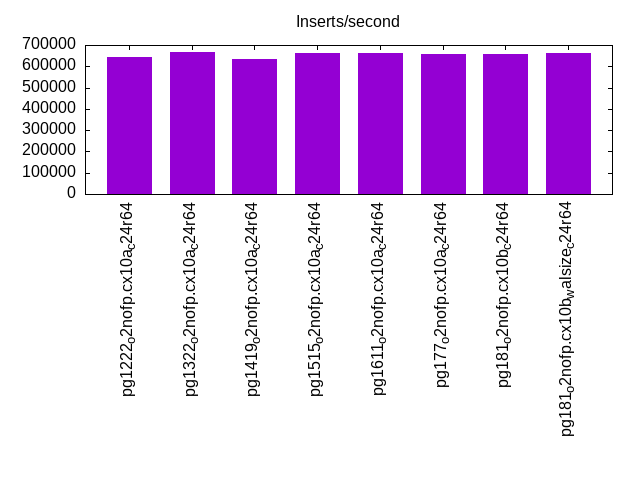
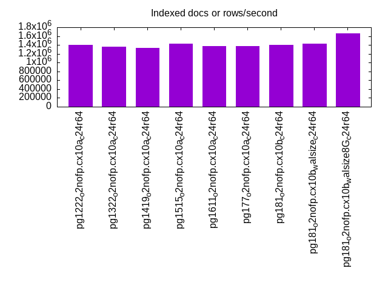
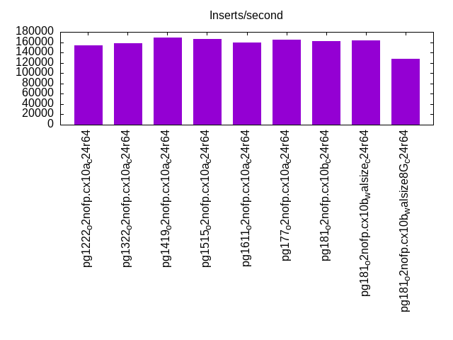
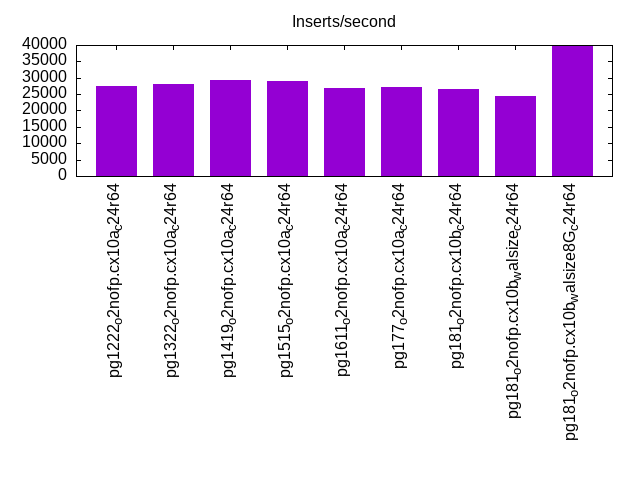
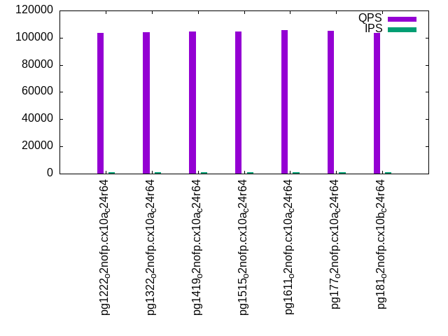
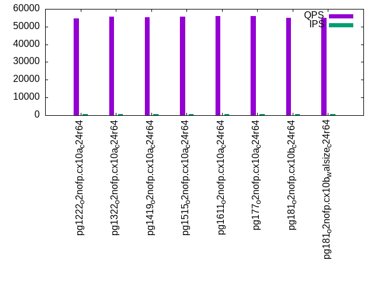
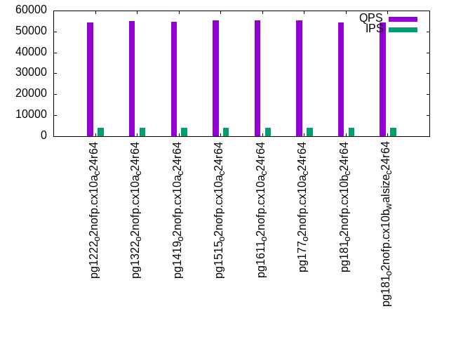
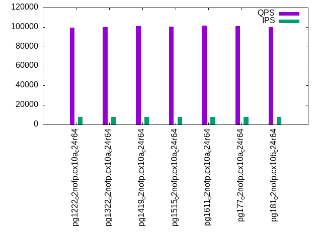
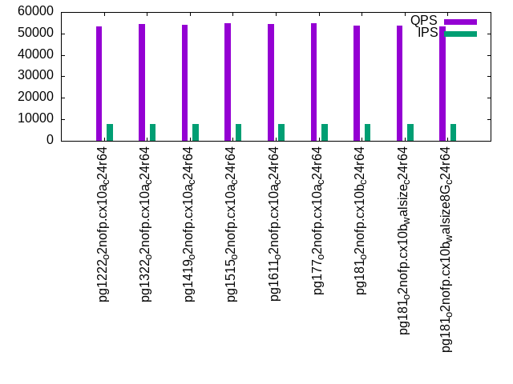

Introduction
This is a report for the insert benchmark with 80M docs and 8 client(s). It is generated by scripts (bash, awk, sed) and Tufte might not be impressed. An overview of the insert benchmark is here and a short update is here. Below, by DBMS, I mean DBMS+version.config. An example is my8020.c10b40 where my means MySQL, 8020 is version 8.0.20 and c10b40 is the name for the configuration file.
The test server has 24 cores, 2 sockets, 64G RAM and 1 NVMe devices. The benchmark was run with 8 clients and there were 1 or 3 connections per client (1 for queries or inserts without rate limits, 1+1 for rate limited inserts+deletes). It uses 8 tables with a table per client. It loads 10M rows per table without secondary indexes, creates 3 secondary indexes per table, then inserts 16m+4m rows per table with a delete per insert to avoid growing the table. It then does 6 read+write tests for 1800s each that do queries as fast as possible with 100,100,500,500,1000,1000 inserts/s and the same for deletes/s per client concurrent with the queries. The database is cached by InnoDB. Clients and the DBMS share one server.
The tested DBMS are:
- pg1222_o2nofp.cx10a_c24r64 - Postgres 12.22 with the cx10a_c24r64 config
- pg1322_o2nofp.cx10a_c24r64 - Postgres 13.22 with the cx10a_c24r64 config
- pg1419_o2nofp.cx10a_c24r64 - Postgres 14.19 with the cx10a_c24r64 config
- pg1515_o2nofp.cx10a_c24r64 - Postgres 15.15 with the cx10a_c24r64 config
- pg1611_o2nofp.cx10a_c24r64 - Postgres 16.11 with the cx10a_c24r64 config
- pg177_o2nofp.cx10a_c24r64 - Postgres 17.7 with the cx10a_c24r64 config
- pg181_o2nofp.cx10b_c24r64 - Postgres 18.1 with the cx10b_c24r64 config that uses io_method=sync
- pg181_o2nofp.cx10b_walsize_c24r64 - Postgres 18.1 with the cx10b_c24r64 config that uses io_method=sync and min_wal_size == max_wal_size
- pg181_o2nofp.cx10b_walsize8G_c24r64 - Postgres 18.1 with the cx10b_c24r64 config that uses io_method=sync and sets min_wal_size and max_wal_size to 8G
Contents
- Summary
- l.i0: load without secondary indexes
- l.x: create secondary indexes
- l.i1: continue load after secondary indexes created with 50 inserts per transaction
- l.i2: continue load after secondary indexes created with 5 inserts per transaction
- qr100.L1: range queries with 100 insert/s per client
- qp100.L2: point queries with 100 insert/s per client
- qr500.L3: range queries with 500 insert/s per client
- qp500.L4: point queries with 500 insert/s per client
- qr1000.L5: range queries with 1000 insert/s per client
- qp1000.L6: point queries with 1000 insert/s per client
Summary
The numbers are inserts/s for l.i0, l.i1 and l.i2, indexed docs (or rows) /s for l.x and queries/s for qr100, qp100 thru qr1000, qp1000" The values are the average rate over the entire test for inserts (IPS) and queries (QPS). The range of values for IPS and QPS is split into 3 parts: bottom 25%, middle 50%, top 25%. Values in the bottom 25% have a red background, values in the top 25% have a green background and values in the middle have no color. A gray background is used for values that can be ignored because the DBMS did not sustain the target insert rate. Red backgrounds are not used when the minimum value is within 80% of the max value.
| dbms | l.i0 | l.x | l.i1 | l.i2 | qr100 | qp100 | qr500 | qp500 | qr1000 | qp1000 |
|---|---|---|---|---|---|---|---|---|---|---|
| pg1222_o2nofp.cx10a_c24r64 | 645161 | 1403510 | 153661 | 27421 | 103300 | 54744 | 100334 | 54202 | 99558 | 53451 |
| pg1322_o2nofp.cx10a_c24r64 | 666667 | 1355934 | 157442 | 27972 | 104062 | 55587 | 100681 | 54962 | 99884 | 54423 |
| pg1419_o2nofp.cx10a_c24r64 | 634921 | 1333335 | 169088 | 29385 | 104719 | 55336 | 101382 | 54752 | 100732 | 54014 |
| pg1515_o2nofp.cx10a_c24r64 | 661157 | 1428573 | 166018 | 28881 | 104744 | 55810 | 101573 | 55166 | 100635 | 54713 |
| pg1611_o2nofp.cx10a_c24r64 | 661157 | 1379312 | 159800 | 26913 | 105607 | 55928 | 102482 | 55184 | 101642 | 54513 |
| pg177_o2nofp.cx10a_c24r64 | 655738 | 1379312 | 164313 | 27119 | 105289 | 55909 | 101930 | 55242 | 101118 | 54625 |
| pg181_o2nofp.cx10b_c24r64 | 655738 | 1403510 | 162643 | 26468 | 103714 | 55134 | 100668 | 54378 | 99674 | 53849 |
| pg181_o2nofp.cx10b_walsize_c24r64 | 661157 | 1428573 | 164102 | 24335 | 104108 | 55002 | 100763 | 54373 | 100005 | 53672 |
| pg181_o2nofp.cx10b_walsize8G_c24r64 | 655738 | 1666669 | 127490 | 39653 | 103130 | 54854 | 100474 | 54028 | 99377 | 53230 |
This table has relative throughput, throughput for the DBMS relative to the DBMS in the first line, using the absolute throughput from the previous table. Values less than 0.95 have a yellow background. Values greater than 1.05 have a blue background.
| dbms | l.i0 | l.x | l.i1 | l.i2 | qr100 | qp100 | qr500 | qp500 | qr1000 | qp1000 |
|---|---|---|---|---|---|---|---|---|---|---|
| pg1222_o2nofp.cx10a_c24r64 | 1.00 | 1.00 | 1.00 | 1.00 | 1.00 | 1.00 | 1.00 | 1.00 | 1.00 | 1.00 |
| pg1322_o2nofp.cx10a_c24r64 | 1.03 | 0.97 | 1.02 | 1.02 | 1.01 | 1.02 | 1.00 | 1.01 | 1.00 | 1.02 |
| pg1419_o2nofp.cx10a_c24r64 | 0.98 | 0.95 | 1.10 | 1.07 | 1.01 | 1.01 | 1.01 | 1.01 | 1.01 | 1.01 |
| pg1515_o2nofp.cx10a_c24r64 | 1.02 | 1.02 | 1.08 | 1.05 | 1.01 | 1.02 | 1.01 | 1.02 | 1.01 | 1.02 |
| pg1611_o2nofp.cx10a_c24r64 | 1.02 | 0.98 | 1.04 | 0.98 | 1.02 | 1.02 | 1.02 | 1.02 | 1.02 | 1.02 |
| pg177_o2nofp.cx10a_c24r64 | 1.02 | 0.98 | 1.07 | 0.99 | 1.02 | 1.02 | 1.02 | 1.02 | 1.02 | 1.02 |
| pg181_o2nofp.cx10b_c24r64 | 1.02 | 1.00 | 1.06 | 0.97 | 1.00 | 1.01 | 1.00 | 1.00 | 1.00 | 1.01 |
| pg181_o2nofp.cx10b_walsize_c24r64 | 1.02 | 1.02 | 1.07 | 0.89 | 1.01 | 1.00 | 1.00 | 1.00 | 1.00 | 1.00 |
| pg181_o2nofp.cx10b_walsize8G_c24r64 | 1.02 | 1.19 | 0.83 | 1.45 | 1.00 | 1.00 | 1.00 | 1.00 | 1.00 | 1.00 |
This lists the average rate of inserts/s for the tests that do inserts concurrent with queries. For such tests the query rate is listed in the table above. The read+write tests are setup so that the insert rate should match the target rate every second. Cells that are not at least 95% of the target have a red background to indicate a failure to satisfy the target.
| dbms | qr100.L1 | qp100.L2 | qr500.L3 | qp500.L4 | qr1000.L5 | qp1000.L6 |
|---|---|---|---|---|---|---|
| pg1222_o2nofp.cx10a_c24r64 | 797 | 797 | 3982 | 3984 | 7969 | 7965 |
| pg1322_o2nofp.cx10a_c24r64 | 797 | 797 | 3982 | 3984 | 7969 | 7965 |
| pg1419_o2nofp.cx10a_c24r64 | 797 | 797 | 3982 | 3984 | 7969 | 7965 |
| pg1515_o2nofp.cx10a_c24r64 | 796 | 797 | 3982 | 3982 | 7969 | 7969 |
| pg1611_o2nofp.cx10a_c24r64 | 796 | 797 | 3982 | 3982 | 7969 | 7969 |
| pg177_o2nofp.cx10a_c24r64 | 797 | 796 | 3984 | 3984 | 7965 | 7965 |
| pg181_o2nofp.cx10b_c24r64 | 796 | 797 | 3984 | 3982 | 7965 | 7969 |
| pg181_o2nofp.cx10b_walsize_c24r64 | 797 | 796 | 3984 | 3984 | 7965 | 7965 |
| pg181_o2nofp.cx10b_walsize8G_c24r64 | 796 | 797 | 3982 | 3982 | 7969 | 7965 |
| target | 800 | 800 | 4000 | 4000 | 8000 | 8000 |
l.i0
l.i0: load without secondary indexes. Graphs for performance per 1-second interval are here.
Average throughput:
Insert response time histogram: each cell has the percentage of responses that take <= the time in the header and max is the max response time in seconds. For the max column values in the top 25% of the range have a red background and in the bottom 25% of the range have a green background. The red background is not used when the min value is within 80% of the max value.
| dbms | 256us | 1ms | 4ms | 16ms | 64ms | 256ms | 1s | 4s | 16s | gt | max |
|---|---|---|---|---|---|---|---|---|---|---|---|
| pg1222_o2nofp.cx10a_c24r64 | 12.690 | 87.246 | 0.053 | 0.011 | 0.031 | ||||||
| pg1322_o2nofp.cx10a_c24r64 | 48.908 | 51.027 | 0.049 | 0.014 | 0.002 | 0.095 | |||||
| pg1419_o2nofp.cx10a_c24r64 | 2.764 | 97.171 | 0.045 | 0.020 | nonzero | 0.066 | |||||
| pg1515_o2nofp.cx10a_c24r64 | 49.605 | 50.330 | 0.051 | 0.015 | 0.033 | ||||||
| pg1611_o2nofp.cx10a_c24r64 | 37.939 | 61.995 | 0.040 | 0.025 | 0.001 | 0.075 | |||||
| pg177_o2nofp.cx10a_c24r64 | 28.680 | 71.272 | 0.020 | 0.024 | 0.004 | 0.167 | |||||
| pg181_o2nofp.cx10b_c24r64 | 30.006 | 69.944 | 0.022 | 0.020 | 0.009 | 0.165 | |||||
| pg181_o2nofp.cx10b_walsize_c24r64 | 26.481 | 73.458 | 0.050 | 0.011 | 0.001 | 0.070 | |||||
| pg181_o2nofp.cx10b_walsize8G_c24r64 | 22.889 | 77.018 | 0.063 | 0.030 | 0.036 |
Performance metrics for the DBMS listed above. Some are normalized by throughput, others are not. Legend for results is here.
ips qps rps rmbps wps wmbps rpq rkbpq wpi wkbpi csps cpups cspq cpupq dbgb1 dbgb2 rss maxop p50 p99 tag 645161 0 1 0.0 2478.5 281.6 0.000 0.000 0.004 0.447 71849 46.4 0.111 17 7.7 20.7 4.9 0.031 94288 82590 pg1222_o2nofp.cx10a_c24r64 666667 0 1 0.0 2492.4 285.3 0.000 0.000 0.004 0.438 71964 46.1 0.108 17 7.7 20.7 1.0 0.095 96988 75391 pg1322_o2nofp.cx10a_c24r64 634921 0 1 0.0 2365.7 271.2 0.000 0.000 0.004 0.437 70115 45.7 0.110 17 7.7 20.7 0.5 0.066 92589 64391 pg1419_o2nofp.cx10a_c24r64 661157 0 1 0.0 2485.7 285.7 0.000 0.000 0.004 0.443 71408 46.0 0.108 17 7.7 20.7 3.2 0.033 97087 85489 pg1515_o2nofp.cx10a_c24r64 661157 0 1 0.0 2462.5 284.6 0.000 0.000 0.004 0.441 71330 46.1 0.108 17 7.7 20.7 5.1 0.075 96489 78589 pg1611_o2nofp.cx10a_c24r64 655738 0 0 0.0 2441.3 282.8 0.000 0.000 0.004 0.442 63363 45.7 0.097 17 7.7 20.7 0.2 0.167 95587 78392 pg177_o2nofp.cx10a_c24r64 655738 0 0 0.0 2436.5 283.3 0.000 0.000 0.004 0.442 63331 45.8 0.097 17 7.7 20.7 0.2 0.165 95588 64192 pg181_o2nofp.cx10b_c24r64 661157 0 1 0.0 2472.7 284.1 0.000 0.000 0.004 0.440 63741 46.0 0.096 17 7.7 20.7 0.2 0.070 95288 83789 pg181_o2nofp.cx10b_walsize_c24r64 655738 0 1 0.0 2567.0 293.9 0.000 0.000 0.004 0.459 63427 46.1 0.097 17 7.7 15.7 0.2 0.036 95389 79585 pg181_o2nofp.cx10b_walsize8G_c24r64
Average values from iostat.
r/s rkB/s rrqm/s %rrqm r_await rareq-s w/s wkB/s wrqm/s %wrqm w_await wareq-s d/s dkB/s drqm/s %drqm d_await dareq-s f/s f_await aqu-sz %util 1.292 5.167 0.000 0.000 0.191 3.833 2478.5 288384 172.8 7.155 3.376 116.7 4.133 31.53 0.000 0.000 0.278 6.508 0.000 0.000 10.55 16.22 pg1222_o2nofp.cx10a_c24r64 0.783 3.133 0.000 0.000 0.410 3.167 2492.4 292178 176.8 7.167 3.628 117.7 4.275 56.10 0.000 0.000 0.267 9.745 0.000 0.000 11.19 16.50 pg1322_o2nofp.cx10a_c24r64 0.856 3.424 0.000 0.000 0.406 3.520 2365.7 277704 163.2 7.082 3.705 117.8 4.184 40.06 0.000 0.000 0.290 7.794 0.000 0.000 11.37 15.98 pg1419_o2nofp.cx10a_c24r64 1.250 5.000 0.000 0.000 0.197 3.667 2485.7 292589 166.1 6.983 3.177 118.1 0.517 10.30 0.000 0.000 0.079 14.11 0.000 0.000 10.99 16.57 pg1515_o2nofp.cx10a_c24r64 0.842 3.366 0.000 0.000 0.531 3.667 2462.5 291472 162.4 6.967 3.539 118.7 0.592 6.600 0.000 0.000 0.117 12.97 0.000 0.000 12.89 16.58 pg1611_o2nofp.cx10a_c24r64 0.050 0.200 0.000 0.000 0.833 0.667 2441.3 289630 153.0 6.291 3.992 118.9 0.492 7.633 0.000 0.000 0.185 10.92 0.000 0.000 14.09 16.59 pg177_o2nofp.cx10a_c24r64 0.025 0.100 0.000 0.000 0.750 0.500 2436.5 290141 158.7 6.821 4.156 119.2 0.425 9.233 0.000 0.000 0.145 10.37 0.000 0.000 15.49 16.51 pg181_o2nofp.cx10b_c24r64 0.942 3.767 0.000 0.000 0.393 3.333 2472.7 290890 164.9 6.641 3.118 118.2 0.625 8.967 0.000 0.000 0.086 10.63 0.000 0.000 10.59 16.83 pg181_o2nofp.cx10b_walsize_c24r64 0.875 3.500 0.000 0.000 0.610 3.167 2567.0 300940 153.8 5.329 3.064 117.8 1.317 3015.9 0.000 0.000 0.170 809.2 0.000 0.000 10.72 15.91 pg181_o2nofp.cx10b_walsize8G_c24r64
l.x
l.x: create secondary indexes.
Average throughput:
Performance metrics for the DBMS listed above. Some are normalized by throughput, others are not. Legend for results is here.
ips qps rps rmbps wps wmbps rpq rkbpq wpi wkbpi csps cpups cspq cpupq dbgb1 dbgb2 rss maxop p50 p99 tag 1403510 0 2 0.0 3390.2 383.8 0.000 0.000 0.002 0.280 6724 24.3 0.005 4 15.4 35.4 6.7 0.003 NA NA pg1222_o2nofp.cx10a_c24r64 1355934 0 2 0.0 3332.2 377.7 0.000 0.000 0.002 0.285 5776 23.9 0.004 4 15.4 35.5 0.3 0.003 NA NA pg1322_o2nofp.cx10a_c24r64 1333335 0 1 0.0 3382.1 383.2 0.000 0.000 0.003 0.294 6216 23.7 0.005 4 15.4 35.5 6.7 0.003 NA NA pg1419_o2nofp.cx10a_c24r64 1428573 0 2 0.0 3377.9 382.8 0.000 0.000 0.002 0.274 6060 24.8 0.004 4 15.4 35.5 6.6 0.003 NA NA pg1515_o2nofp.cx10a_c24r64 1379312 0 1 0.0 3283.2 371.6 0.000 0.000 0.002 0.276 5722 25.0 0.004 4 15.4 35.5 6.7 0.003 NA NA pg1611_o2nofp.cx10a_c24r64 1379312 0 0 0.0 3862.3 438.7 0.000 0.000 0.003 0.326 3626 24.1 0.003 4 15.4 35.4 6.1 0.003 NA NA pg177_o2nofp.cx10a_c24r64 1403510 0 0 0.0 3758.5 426.6 0.000 0.000 0.003 0.311 3709 23.8 0.003 4 15.4 35.4 6.7 0.003 NA NA pg181_o2nofp.cx10b_c24r64 1428573 0 1 0.0 3851.0 436.9 0.000 0.000 0.003 0.313 3900 23.8 0.003 4 15.4 35.4 6.7 0.003 NA NA pg181_o2nofp.cx10b_walsize_c24r64 1666669 0 1 0.0 2726.1 313.1 0.000 0.000 0.002 0.192 3795 27.9 0.002 4 15.4 23.4 6.7 0.003 NA NA pg181_o2nofp.cx10b_walsize8G_c24r64
Average values from iostat.
r/s rkB/s rrqm/s %rrqm r_await rareq-s w/s wkB/s wrqm/s %wrqm w_await wareq-s d/s dkB/s drqm/s %drqm d_await dareq-s f/s f_await aqu-sz %util 2.073 8.291 0.000 0.000 5.193 3.273 3390.2 392994 129.1 7.673 9.000 105.9 2.927 19.64 0.000 0.000 0.307 6.347 0.000 0.000 36.86 26.59 pg1222_o2nofp.cx10a_c24r64 1.667 6.667 0.000 0.000 4.123 3.000 3332.2 386759 131.4 9.814 8.732 101.7 3.450 32.07 0.000 0.000 0.268 9.101 0.000 0.000 37.59 25.84 pg1322_o2nofp.cx10a_c24r64 0.817 3.267 0.000 0.000 2.723 3.000 3382.1 392411 125.5 7.696 11.20 107.0 2.533 19.27 0.000 0.000 0.276 7.031 0.000 0.000 44.54 25.86 pg1419_o2nofp.cx10a_c24r64 1.745 6.981 0.000 0.000 4.605 3.273 3377.9 392014 126.8 12.18 7.456 101.8 0.782 12.22 0.000 0.000 0.145 7.125 0.000 0.000 31.96 26.45 pg1515_o2nofp.cx10a_c24r64 0.855 3.418 0.000 0.000 2.720 3.273 3283.2 380512 123.1 12.65 10.64 102.8 0.273 1.745 0.000 0.000 0.136 3.909 0.000 0.000 44.39 24.90 pg1611_o2nofp.cx10a_c24r64 0.182 0.727 0.000 0.000 0.818 2.182 3862.3 449260 126.9 7.466 7.203 110.2 3.200 36051.2 0.000 0.000 0.303 6418.1 0.000 0.000 43.15 30.42 pg177_o2nofp.cx10a_c24r64 0.036 0.145 0.000 0.000 0.500 0.364 3758.5 436871 131.9 13.85 6.635 99.84 3.327 33289.5 0.000 0.000 0.300 7377.9 0.000 0.000 40.33 28.73 pg181_o2nofp.cx10b_c24r64 1.055 4.218 0.000 0.000 0.642 3.273 3851.0 447418 135.2 9.423 6.035 107.4 2.927 38773.4 0.000 0.000 0.483 7035.0 0.000 0.000 32.38 29.67 pg181_o2nofp.cx10b_walsize_c24r64 0.644 2.578 0.000 0.000 4.908 2.222 2726.1 320609 55.38 3.076 5.200 108.0 1.556 6204.4 0.000 0.000 0.097 555.1 0.000 0.000 21.37 20.61 pg181_o2nofp.cx10b_walsize8G_c24r64
l.i1
l.i1: continue load after secondary indexes created with 50 inserts per transaction. Graphs for performance per 1-second interval are here.
Average throughput:
Insert response time histogram: each cell has the percentage of responses that take <= the time in the header and max is the max response time in seconds. For the max column values in the top 25% of the range have a red background and in the bottom 25% of the range have a green background. The red background is not used when the min value is within 80% of the max value.
| dbms | 256us | 1ms | 4ms | 16ms | 64ms | 256ms | 1s | 4s | 16s | gt | max |
|---|---|---|---|---|---|---|---|---|---|---|---|
| pg1222_o2nofp.cx10a_c24r64 | 99.744 | 0.144 | 0.112 | 0.001 | 0.148 | ||||||
| pg1322_o2nofp.cx10a_c24r64 | 99.753 | 0.144 | 0.102 | 0.001 | 0.097 | ||||||
| pg1419_o2nofp.cx10a_c24r64 | 99.683 | 0.178 | 0.139 | nonzero | 0.079 | ||||||
| pg1515_o2nofp.cx10a_c24r64 | 99.710 | 0.165 | 0.125 | nonzero | 0.065 | ||||||
| pg1611_o2nofp.cx10a_c24r64 | 99.696 | 0.178 | 0.126 | nonzero | 0.074 | ||||||
| pg177_o2nofp.cx10a_c24r64 | 99.628 | 0.225 | 0.147 | nonzero | 0.095 | ||||||
| pg181_o2nofp.cx10b_c24r64 | 99.704 | 0.185 | 0.110 | 0.001 | 0.089 | ||||||
| pg181_o2nofp.cx10b_walsize_c24r64 | 99.659 | 0.206 | 0.134 | 0.001 | 0.098 | ||||||
| pg181_o2nofp.cx10b_walsize8G_c24r64 | 95.209 | 2.168 | 2.622 | 0.001 | 0.130 |
Delete response time histogram: each cell has the percentage of responses that take <= the time in the header and max is the max response time in seconds. For the max column values in the top 25% of the range have a red background and in the bottom 25% of the range have a green background. The red background is not used when the min value is within 80% of the max value.
| dbms | 256us | 1ms | 4ms | 16ms | 64ms | 256ms | 1s | 4s | 16s | gt | max |
|---|---|---|---|---|---|---|---|---|---|---|---|
| pg1222_o2nofp.cx10a_c24r64 | 20.547 | 71.727 | 7.607 | 0.118 | 0.001 | 0.147 | |||||
| pg1322_o2nofp.cx10a_c24r64 | 21.743 | 73.402 | 4.747 | 0.107 | 0.001 | 0.099 | |||||
| pg1419_o2nofp.cx10a_c24r64 | 18.625 | 79.130 | 2.123 | 0.122 | nonzero | 0.078 | |||||
| pg1515_o2nofp.cx10a_c24r64 | 18.568 | 78.915 | 2.396 | 0.121 | nonzero | 0.068 | |||||
| pg1611_o2nofp.cx10a_c24r64 | 16.831 | 78.282 | 4.757 | 0.130 | nonzero | 0.075 | |||||
| pg177_o2nofp.cx10a_c24r64 | 15.785 | 79.922 | 4.148 | 0.145 | nonzero | 0.094 | |||||
| pg181_o2nofp.cx10b_c24r64 | 13.214 | 83.440 | 3.226 | 0.119 | 0.001 | 0.090 | |||||
| pg181_o2nofp.cx10b_walsize_c24r64 | 13.911 | 81.922 | 4.035 | 0.131 | 0.001 | 0.098 | |||||
| pg181_o2nofp.cx10b_walsize8G_c24r64 | 19.451 | 73.442 | 4.585 | 2.522 | nonzero | 0.129 |
Performance metrics for the DBMS listed above. Some are normalized by throughput, others are not. Legend for results is here.
ips qps rps rmbps wps wmbps rpq rkbpq wpi wkbpi csps cpups cspq cpupq dbgb1 dbgb2 rss maxop p50 p99 tag 153661 0 0 0.0 1944.3 220.7 0.000 0.000 0.013 1.471 79775 63.5 0.519 99 22.6 86.7 15.9 0.148 22447 3199 pg1222_o2nofp.cx10a_c24r64 157442 0 0 0.0 1993.1 226.4 0.000 0.000 0.013 1.473 81388 63.1 0.517 96 22.5 86.5 19.2 0.097 20097 7099 pg1322_o2nofp.cx10a_c24r64 169088 0 0 0.0 2117.8 239.5 0.000 0.000 0.013 1.450 88402 62.2 0.523 88 21.8 85.9 14.6 0.079 21047 5399 pg1419_o2nofp.cx10a_c24r64 166018 0 0 0.0 2072.4 234.8 0.000 0.000 0.012 1.448 85540 62.1 0.515 90 21.8 85.8 16.9 0.065 19847 4149 pg1515_o2nofp.cx10a_c24r64 159800 0 0 0.0 1910.2 224.5 0.000 0.000 0.012 1.439 82404 61.0 0.516 92 21.6 85.7 14.0 0.074 19847 4149 pg1611_o2nofp.cx10a_c24r64 164313 0 0 0.0 1968.9 231.0 0.000 0.000 0.012 1.440 75298 60.4 0.458 88 21.6 85.7 15.2 0.095 18148 4249 pg177_o2nofp.cx10a_c24r64 162643 0 0 0.0 1974.2 230.1 0.000 0.000 0.012 1.449 74951 60.3 0.461 89 21.6 85.7 10.9 0.089 16898 4949 pg181_o2nofp.cx10b_c24r64 164102 0 0 0.0 1977.8 231.4 0.000 0.000 0.012 1.444 75700 61.4 0.461 90 21.6 85.6 11.9 0.098 17897 4999 pg181_o2nofp.cx10b_walsize_c24r64 127490 0 0 0.0 9044.2 798.5 0.000 0.000 0.071 6.413 64323 50.2 0.505 95 21.1 29.1 8.7 0.130 16548 3949 pg181_o2nofp.cx10b_walsize8G_c24r64
Average values from iostat.
r/s rkB/s rrqm/s %rrqm r_await rareq-s w/s wkB/s wrqm/s %wrqm w_await wareq-s d/s dkB/s drqm/s %drqm d_await dareq-s f/s f_await aqu-sz %util 0.467 1.870 0.000 0.000 0.186 2.193 1944.3 226008 113.4 4.735 1.545 116.3 3.453 418.1 0.000 0.000 0.267 96.02 0.000 0.000 3.490 11.60 pg1222_o2nofp.cx10a_c24r64 0.325 1.299 0.000 0.000 0.144 1.975 1993.1 231868 125.8 5.107 1.438 116.4 3.372 115.9 0.000 0.000 0.265 29.76 0.000 0.000 3.434 11.89 pg1322_o2nofp.cx10a_c24r64 0.342 1.367 0.000 0.000 0.114 2.384 2117.8 245211 123.3 4.784 1.537 116.0 3.221 104.6 0.000 0.000 0.262 19.96 0.000 0.000 3.771 12.63 pg1419_o2nofp.cx10a_c24r64 0.397 1.590 0.000 0.000 0.131 2.208 2072.4 240462 115.0 4.386 1.481 116.2 0.123 48.08 0.000 0.000 0.015 9.293 0.000 0.000 3.551 12.11 pg1515_o2nofp.cx10a_c24r64 0.310 1.240 0.000 0.000 0.082 1.600 1910.2 229917 105.3 4.328 1.458 120.0 0.116 45.33 0.000 0.000 0.024 6.012 0.000 0.000 3.249 11.70 pg1611_o2nofp.cx10a_c24r64 0.023 0.092 0.000 0.000 0.093 0.359 1968.9 236529 101.8 4.197 1.623 119.6 0.083 164.8 0.000 0.000 0.026 185.2 0.000 0.000 3.679 12.14 pg177_o2nofp.cx10a_c24r64 0.009 0.036 0.000 0.000 0.038 0.178 1974.2 235658 101.8 4.157 1.768 119.0 0.079 103.3 0.000 0.000 0.030 146.6 0.000 0.000 3.961 12.07 pg181_o2nofp.cx10b_c24r64 0.437 1.750 0.000 0.000 0.158 2.142 1977.8 236997 102.8 4.243 1.445 119.3 0.071 69.71 0.000 0.000 0.028 37.88 0.000 0.000 3.288 12.17 pg181_o2nofp.cx10b_walsize_c24r64 0.466 1.863 0.000 0.000 0.116 2.468 9044.2 817619 454.8 4.754 1.433 96.75 16.15 207296 0.000 0.000 0.096 3563.8 0.000 0.000 11.76 44.99 pg181_o2nofp.cx10b_walsize8G_c24r64
l.i2
l.i2: continue load after secondary indexes created with 5 inserts per transaction. Graphs for performance per 1-second interval are here.
Average throughput:
Insert response time histogram: each cell has the percentage of responses that take <= the time in the header and max is the max response time in seconds. For the max column values in the top 25% of the range have a red background and in the bottom 25% of the range have a green background. The red background is not used when the min value is within 80% of the max value.
| dbms | 256us | 1ms | 4ms | 16ms | 64ms | 256ms | 1s | 4s | 16s | gt | max |
|---|---|---|---|---|---|---|---|---|---|---|---|
| pg1222_o2nofp.cx10a_c24r64 | 12.625 | 87.373 | 0.003 | 0.004 | |||||||
| pg1322_o2nofp.cx10a_c24r64 | 15.077 | 84.922 | 0.002 | nonzero | nonzero | 0.074 | |||||
| pg1419_o2nofp.cx10a_c24r64 | 13.570 | 86.428 | 0.001 | nonzero | 0.084 | ||||||
| pg1515_o2nofp.cx10a_c24r64 | 10.179 | 89.820 | 0.001 | nonzero | 0.073 | ||||||
| pg1611_o2nofp.cx10a_c24r64 | 15.511 | 84.488 | 0.001 | 0.002 | |||||||
| pg177_o2nofp.cx10a_c24r64 | 24.554 | 75.446 | 0.001 | nonzero | 0.080 | ||||||
| pg181_o2nofp.cx10b_c24r64 | 26.150 | 73.850 | nonzero | 0.002 | |||||||
| pg181_o2nofp.cx10b_walsize_c24r64 | 23.519 | 76.480 | 0.001 | nonzero | 0.071 | ||||||
| pg181_o2nofp.cx10b_walsize8G_c24r64 | 14.332 | 85.605 | 0.024 | 0.038 | nonzero | 0.018 |
Delete response time histogram: each cell has the percentage of responses that take <= the time in the header and max is the max response time in seconds. For the max column values in the top 25% of the range have a red background and in the bottom 25% of the range have a green background. The red background is not used when the min value is within 80% of the max value.
| dbms | 256us | 1ms | 4ms | 16ms | 64ms | 256ms | 1s | 4s | 16s | gt | max |
|---|---|---|---|---|---|---|---|---|---|---|---|
| pg1222_o2nofp.cx10a_c24r64 | 0.076 | 47.666 | 51.535 | 0.722 | 0.001 | 0.037 | |||||
| pg1322_o2nofp.cx10a_c24r64 | 0.059 | 48.398 | 49.855 | 1.688 | nonzero | nonzero | 0.075 | ||||
| pg1419_o2nofp.cx10a_c24r64 | 0.044 | 40.188 | 59.766 | 0.002 | nonzero | nonzero | 0.084 | ||||
| pg1515_o2nofp.cx10a_c24r64 | 0.035 | 37.998 | 61.962 | 0.004 | nonzero | nonzero | 0.073 | ||||
| pg1611_o2nofp.cx10a_c24r64 | 0.022 | 29.932 | 70.045 | 0.002 | nonzero | 0.023 | |||||
| pg177_o2nofp.cx10a_c24r64 | 0.062 | 33.861 | 65.753 | 0.324 | nonzero | 0.080 | |||||
| pg181_o2nofp.cx10b_c24r64 | 0.005 | 34.018 | 65.558 | 0.420 | 0.012 | ||||||
| pg181_o2nofp.cx10b_walsize_c24r64 | 0.007 | 37.998 | 61.056 | 0.939 | nonzero | 0.072 | |||||
| pg181_o2nofp.cx10b_walsize8G_c24r64 | 0.011 | 62.618 | 37.290 | 0.079 | 0.001 | 0.018 |
Performance metrics for the DBMS listed above. Some are normalized by throughput, others are not. Legend for results is here.
ips qps rps rmbps wps wmbps rpq rkbpq wpi wkbpi csps cpups cspq cpupq dbgb1 dbgb2 rss maxop p50 p99 tag 27421 0 0 0.0 238.2 28.1 0.000 0.000 0.009 1.051 133691 43.4 4.876 380 22.8 86.8 6.2 0.004 2315 1220 pg1222_o2nofp.cx10a_c24r64 27972 0 0 0.0 237.1 28.0 0.000 0.000 0.008 1.024 137149 44.8 4.903 384 22.6 86.7 14.4 0.074 2640 1070 pg1322_o2nofp.cx10a_c24r64 29385 0 0 0.0 244.0 29.0 0.000 0.000 0.008 1.010 144019 43.0 4.901 351 22.0 86.0 12.9 0.084 2680 1785 pg1419_o2nofp.cx10a_c24r64 28881 0 0 0.0 238.2 28.6 0.000 0.000 0.008 1.012 141427 43.0 4.897 357 21.9 86.0 11.3 0.073 2285 1520 pg1515_o2nofp.cx10a_c24r64 26913 0 0 0.0 221.0 26.5 0.000 0.000 0.008 1.009 132588 42.6 4.926 380 21.8 85.9 7.2 0.002 3060 1715 pg1611_o2nofp.cx10a_c24r64 27119 0 0 0.0 222.7 26.7 0.000 0.000 0.008 1.007 115426 42.0 4.256 372 21.8 85.9 10.3 0.080 2460 995 pg177_o2nofp.cx10a_c24r64 26468 0 0 0.0 218.0 26.1 0.000 0.000 0.008 1.011 113515 42.2 4.289 383 21.8 85.9 15.3 0.002 2360 1200 pg181_o2nofp.cx10b_c24r64 24335 0 0 0.0 200.7 24.0 0.000 0.000 0.008 1.011 104255 40.2 4.284 396 21.8 85.8 15.6 0.071 2150 1280 pg181_o2nofp.cx10b_walsize_c24r64 39653 0 0 0.0 11069.1 497.6 0.000 0.000 0.279 12.849 171155 48.6 4.316 294 21.3 29.3 10.8 0.018 4489 1970 pg181_o2nofp.cx10b_walsize8G_c24r64
Average values from iostat.
r/s rkB/s rrqm/s %rrqm r_await rareq-s w/s wkB/s wrqm/s %wrqm w_await wareq-s d/s dkB/s drqm/s %drqm d_await dareq-s f/s f_await aqu-sz %util 0.003 0.010 0.000 0.000 0.004 0.052 238.2 28821.8 9.042 4.234 0.133 119.9 2.348 14.38 0.000 0.000 0.251 5.826 0.000 0.000 0.033 1.251 pg1222_o2nofp.cx10a_c24r64 0.000 0.000 0.000 0.000 0.000 0.000 237.1 28653.6 9.052 3.968 0.136 121.1 2.362 51.50 0.000 0.000 0.256 16.49 0.000 0.000 0.033 1.238 pg1322_o2nofp.cx10a_c24r64 0.002 0.007 0.000 0.000 0.000 0.037 244.0 29682.5 7.221 3.366 0.136 121.1 2.328 26.18 0.000 0.000 0.256 9.913 0.000 0.000 0.034 1.279 pg1419_o2nofp.cx10a_c24r64 0.000 0.000 0.000 0.000 0.000 0.000 238.2 29241.6 5.636 2.659 0.138 122.7 0.007 6.878 0.000 0.000 0.006 11.70 0.000 0.000 0.033 1.216 pg1515_o2nofp.cx10a_c24r64 0.000 0.000 0.000 0.000 0.000 0.000 221.0 27142.7 4.965 2.396 0.138 123.1 0.005 0.300 0.000 0.000 0.006 0.534 0.000 0.000 0.030 1.143 pg1611_o2nofp.cx10a_c24r64 0.000 0.000 0.000 0.000 0.000 0.000 222.7 27315.4 4.575 2.257 0.139 122.6 0.005 7.027 0.000 0.000 0.006 34.16 0.000 0.000 0.031 1.140 pg177_o2nofp.cx10a_c24r64 0.000 0.000 0.000 0.000 0.000 0.000 218.0 26764.0 4.547 2.223 0.139 122.8 0.002 0.010 0.000 0.000 0.004 0.050 0.000 0.000 0.031 1.118 pg181_o2nofp.cx10b_c24r64 0.002 0.009 0.000 0.000 0.004 0.046 200.7 24595.0 4.167 2.388 0.139 122.0 0.002 2.732 0.000 0.000 0.000 6.829 0.000 0.000 0.029 1.043 pg181_o2nofp.cx10b_walsize_c24r64 0.000 0.000 0.000 0.000 0.000 0.000 11069.1 509510 96.83 2.046 0.136 52.08 0.075 184.5 0.000 0.000 0.085 638.7 0.000 0.000 1.471 22.81 pg181_o2nofp.cx10b_walsize8G_c24r64
qr100.L1
qr100.L1: range queries with 100 insert/s per client. Graphs for performance per 1-second interval are here.
Average throughput:
Query response time histogram: each cell has the percentage of responses that take <= the time in the header and max is the max response time in seconds. For max values in the top 25% of the range have a red background and in the bottom 25% of the range have a green background. The red background is not used when the min value is within 80% of the max value.
| dbms | 256us | 1ms | 4ms | 16ms | 64ms | 256ms | 1s | 4s | 16s | gt | max |
|---|---|---|---|---|---|---|---|---|---|---|---|
| pg1222_o2nofp.cx10a_c24r64 | 99.998 | 0.002 | nonzero | 0.002 | |||||||
| pg1322_o2nofp.cx10a_c24r64 | 99.999 | 0.001 | nonzero | 0.002 | |||||||
| pg1419_o2nofp.cx10a_c24r64 | 99.999 | 0.001 | nonzero | 0.002 | |||||||
| pg1515_o2nofp.cx10a_c24r64 | 99.998 | 0.002 | nonzero | 0.001 | |||||||
| pg1611_o2nofp.cx10a_c24r64 | 99.998 | 0.002 | nonzero | 0.002 | |||||||
| pg177_o2nofp.cx10a_c24r64 | 99.998 | 0.002 | nonzero | 0.003 | |||||||
| pg181_o2nofp.cx10b_c24r64 | 99.998 | 0.002 | nonzero | 0.002 | |||||||
| pg181_o2nofp.cx10b_walsize_c24r64 | 99.998 | 0.002 | nonzero | 0.002 | |||||||
| pg181_o2nofp.cx10b_walsize8G_c24r64 | 99.998 | 0.002 | nonzero | 0.002 |
Insert response time histogram: each cell has the percentage of responses that take <= the time in the header and max is the max response time in seconds. For max values in the top 25% of the range have a red background and in the bottom 25% of the range have a green background. The red background is not used when the min value is within 80% of the max value.
| dbms | 256us | 1ms | 4ms | 16ms | 64ms | 256ms | 1s | 4s | 16s | gt | max |
|---|---|---|---|---|---|---|---|---|---|---|---|
| pg1222_o2nofp.cx10a_c24r64 | 99.774 | 0.226 | 0.009 | ||||||||
| pg1322_o2nofp.cx10a_c24r64 | 99.785 | 0.215 | 0.010 | ||||||||
| pg1419_o2nofp.cx10a_c24r64 | 99.778 | 0.222 | 0.009 | ||||||||
| pg1515_o2nofp.cx10a_c24r64 | 99.792 | 0.208 | 0.009 | ||||||||
| pg1611_o2nofp.cx10a_c24r64 | 99.726 | 0.274 | 0.009 | ||||||||
| pg177_o2nofp.cx10a_c24r64 | 99.802 | 0.198 | 0.009 | ||||||||
| pg181_o2nofp.cx10b_c24r64 | 99.795 | 0.205 | 0.009 | ||||||||
| pg181_o2nofp.cx10b_walsize_c24r64 | 99.743 | 0.257 | 0.009 | ||||||||
| pg181_o2nofp.cx10b_walsize8G_c24r64 | 99.806 | 0.194 | 0.009 |
Delete response time histogram: each cell has the percentage of responses that take <= the time in the header and max is the max response time in seconds. For max values in the top 25% of the range have a red background and in the bottom 25% of the range have a green background. The red background is not used when the min value is within 80% of the max value.
| dbms | 256us | 1ms | 4ms | 16ms | 64ms | 256ms | 1s | 4s | 16s | gt | max |
|---|---|---|---|---|---|---|---|---|---|---|---|
| pg1222_o2nofp.cx10a_c24r64 | 40.344 | 59.656 | 0.003 | ||||||||
| pg1322_o2nofp.cx10a_c24r64 | 41.469 | 58.531 | 0.003 | ||||||||
| pg1419_o2nofp.cx10a_c24r64 | 40.778 | 59.222 | 0.004 | ||||||||
| pg1515_o2nofp.cx10a_c24r64 | 37.750 | 62.250 | 0.003 | ||||||||
| pg1611_o2nofp.cx10a_c24r64 | 29.927 | 70.069 | 0.003 | 0.004 | |||||||
| pg177_o2nofp.cx10a_c24r64 | 34.497 | 65.503 | 0.004 | ||||||||
| pg181_o2nofp.cx10b_c24r64 | 25.583 | 74.417 | 0.003 | ||||||||
| pg181_o2nofp.cx10b_walsize_c24r64 | 26.729 | 73.271 | 0.004 | ||||||||
| pg181_o2nofp.cx10b_walsize8G_c24r64 | 26.983 | 73.017 | 0.003 |
Performance metrics for the DBMS listed above. Some are normalized by throughput, others are not. Legend for results is here.
ips qps rps rmbps wps wmbps rpq rkbpq wpi wkbpi csps cpups cspq cpupq dbgb1 dbgb2 rss maxop p50 p99 tag 797 103300 0 0.0 37.6 3.6 0.000 0.000 0.047 4.665 394831 33.3 3.822 77 22.8 86.8 0.4 0.002 13006 12414 pg1222_o2nofp.cx10a_c24r64 797 104062 0 0.0 37.6 3.6 0.000 0.000 0.047 4.669 397755 33.3 3.822 77 22.6 86.6 0.4 0.002 13087 12558 pg1322_o2nofp.cx10a_c24r64 797 104719 0 0.0 38.4 3.7 0.000 0.000 0.048 4.738 400153 33.3 3.821 76 22.0 86.0 0.4 0.002 13181 12574 pg1419_o2nofp.cx10a_c24r64 796 104744 0 0.0 36.0 3.7 0.000 0.000 0.045 4.703 400387 33.3 3.823 76 21.9 86.0 0.4 0.001 13182 12686 pg1515_o2nofp.cx10a_c24r64 796 105607 0 0.0 35.9 3.7 0.000 0.000 0.045 4.707 403556 33.3 3.821 76 21.8 85.8 1.2 0.002 13326 12765 pg1611_o2nofp.cx10a_c24r64 797 105289 0 0.0 36.0 3.7 0.000 0.000 0.045 4.711 402179 33.3 3.820 76 21.8 85.8 0.4 0.003 13246 12654 pg177_o2nofp.cx10a_c24r64 796 103714 0 0.0 36.3 3.7 0.000 0.000 0.046 4.718 396398 33.3 3.822 77 21.8 85.8 0.4 0.002 13038 12413 pg181_o2nofp.cx10b_c24r64 797 104108 0 0.0 36.0 3.7 0.000 0.000 0.045 4.706 397812 33.3 3.821 77 21.8 85.8 0.0 0.002 13069 12494 pg181_o2nofp.cx10b_walsize_c24r64 796 103130 0 0.0 123.2 7.5 0.000 0.000 0.155 9.702 394342 33.2 3.824 77 21.3 29.3 0.4 0.002 12974 12431 pg181_o2nofp.cx10b_walsize8G_c24r64
Average values from iostat.
r/s rkB/s rrqm/s %rrqm r_await rareq-s w/s wkB/s wrqm/s %wrqm w_await wareq-s d/s dkB/s drqm/s %drqm d_await dareq-s f/s f_await aqu-sz %util 0.001 0.002 0.000 0.000 0.000 0.011 37.59 3717.4 4.453 14.28 0.153 95.39 2.000 10.41 0.000 0.000 0.250 5.203 0.000 0.000 0.006 0.221 pg1222_o2nofp.cx10a_c24r64 0.000 0.000 0.000 0.000 0.000 0.000 37.62 3720.7 3.165 10.48 0.153 95.60 2.000 10.79 0.000 0.000 0.248 5.396 0.000 0.000 0.006 0.220 pg1322_o2nofp.cx10a_c24r64 0.001 0.004 0.000 0.000 0.000 0.022 38.37 3775.5 3.868 12.57 0.156 95.11 2.001 10.80 0.000 0.000 0.248 5.397 0.000 0.000 0.007 0.207 pg1419_o2nofp.cx10a_c24r64 0.000 0.000 0.000 0.000 0.000 0.000 36.02 3745.2 0.736 2.616 0.163 103.0 0.001 0.002 0.000 0.000 0.000 0.011 0.000 0.000 0.006 0.196 pg1515_o2nofp.cx10a_c24r64 0.000 0.000 0.000 0.000 0.000 0.000 35.93 3748.9 0.793 2.755 0.169 103.2 0.001 0.002 0.000 0.000 0.000 0.011 0.000 0.000 0.007 0.182 pg1611_o2nofp.cx10a_c24r64 0.000 0.000 0.000 0.000 0.000 0.000 36.02 3754.5 0.648 2.299 0.173 102.6 0.001 0.002 0.000 0.000 0.003 0.011 0.000 0.000 0.006 0.210 pg177_o2nofp.cx10a_c24r64 0.000 0.000 0.000 0.000 0.000 0.000 36.32 3757.7 0.800 2.851 0.172 102.0 0.001 0.002 0.000 0.000 0.000 0.011 0.000 0.000 0.006 0.235 pg181_o2nofp.cx10b_c24r64 0.000 0.000 0.000 0.000 0.000 0.000 36.05 3750.3 0.639 2.354 0.178 102.3 0.001 0.002 0.000 0.000 0.000 0.011 0.000 0.000 0.007 0.215 pg181_o2nofp.cx10b_walsize_c24r64 0.000 0.000 0.000 0.000 0.000 0.000 123.2 7726.7 1.671 2.823 0.139 86.21 0.001 0.002 0.000 0.000 0.000 0.011 0.000 0.000 0.013 0.339 pg181_o2nofp.cx10b_walsize8G_c24r64
qp100.L2
qp100.L2: point queries with 100 insert/s per client. Graphs for performance per 1-second interval are here.
Average throughput:
Query response time histogram: each cell has the percentage of responses that take <= the time in the header and max is the max response time in seconds. For max values in the top 25% of the range have a red background and in the bottom 25% of the range have a green background. The red background is not used when the min value is within 80% of the max value.
| dbms | 256us | 1ms | 4ms | 16ms | 64ms | 256ms | 1s | 4s | 16s | gt | max |
|---|---|---|---|---|---|---|---|---|---|---|---|
| pg1222_o2nofp.cx10a_c24r64 | 99.978 | 0.022 | nonzero | 0.003 | |||||||
| pg1322_o2nofp.cx10a_c24r64 | 99.981 | 0.019 | nonzero | 0.002 | |||||||
| pg1419_o2nofp.cx10a_c24r64 | 99.980 | 0.020 | nonzero | 0.002 | |||||||
| pg1515_o2nofp.cx10a_c24r64 | 99.983 | 0.017 | nonzero | 0.002 | |||||||
| pg1611_o2nofp.cx10a_c24r64 | 99.981 | 0.019 | nonzero | 0.004 | |||||||
| pg177_o2nofp.cx10a_c24r64 | 99.985 | 0.015 | nonzero | 0.003 | |||||||
| pg181_o2nofp.cx10b_c24r64 | 99.981 | 0.019 | nonzero | 0.001 | |||||||
| pg181_o2nofp.cx10b_walsize_c24r64 | 99.982 | 0.018 | nonzero | 0.003 | |||||||
| pg181_o2nofp.cx10b_walsize8G_c24r64 | 99.982 | 0.018 | nonzero | nonzero | nonzero | 0.025 |
Insert response time histogram: each cell has the percentage of responses that take <= the time in the header and max is the max response time in seconds. For max values in the top 25% of the range have a red background and in the bottom 25% of the range have a green background. The red background is not used when the min value is within 80% of the max value.
| dbms | 256us | 1ms | 4ms | 16ms | 64ms | 256ms | 1s | 4s | 16s | gt | max |
|---|---|---|---|---|---|---|---|---|---|---|---|
| pg1222_o2nofp.cx10a_c24r64 | 99.646 | 0.354 | 0.008 | ||||||||
| pg1322_o2nofp.cx10a_c24r64 | 99.823 | 0.177 | 0.009 | ||||||||
| pg1419_o2nofp.cx10a_c24r64 | 99.812 | 0.188 | 0.008 | ||||||||
| pg1515_o2nofp.cx10a_c24r64 | 99.816 | 0.184 | 0.009 | ||||||||
| pg1611_o2nofp.cx10a_c24r64 | 99.833 | 0.167 | 0.009 | ||||||||
| pg177_o2nofp.cx10a_c24r64 | 99.858 | 0.142 | 0.008 | ||||||||
| pg181_o2nofp.cx10b_c24r64 | 99.840 | 0.160 | 0.009 | ||||||||
| pg181_o2nofp.cx10b_walsize_c24r64 | 99.847 | 0.153 | 0.009 | ||||||||
| pg181_o2nofp.cx10b_walsize8G_c24r64 | 99.691 | 0.226 | 0.083 | 0.031 |
Delete response time histogram: each cell has the percentage of responses that take <= the time in the header and max is the max response time in seconds. For max values in the top 25% of the range have a red background and in the bottom 25% of the range have a green background. The red background is not used when the min value is within 80% of the max value.
| dbms | 256us | 1ms | 4ms | 16ms | 64ms | 256ms | 1s | 4s | 16s | gt | max |
|---|---|---|---|---|---|---|---|---|---|---|---|
| pg1222_o2nofp.cx10a_c24r64 | 99.688 | 0.312 | 0.008 | ||||||||
| pg1322_o2nofp.cx10a_c24r64 | 99.819 | 0.181 | 0.008 | ||||||||
| pg1419_o2nofp.cx10a_c24r64 | 99.972 | 0.028 | 0.008 | ||||||||
| pg1515_o2nofp.cx10a_c24r64 | 99.969 | 0.031 | 0.008 | ||||||||
| pg1611_o2nofp.cx10a_c24r64 | 99.965 | 0.035 | 0.008 | ||||||||
| pg177_o2nofp.cx10a_c24r64 | 99.972 | 0.028 | 0.008 | ||||||||
| pg181_o2nofp.cx10b_c24r64 | 99.924 | 0.076 | 0.008 | ||||||||
| pg181_o2nofp.cx10b_walsize_c24r64 | 99.972 | 0.028 | 0.008 | ||||||||
| pg181_o2nofp.cx10b_walsize8G_c24r64 | 10.073 | 89.701 | 0.146 | 0.080 | 0.025 |
Performance metrics for the DBMS listed above. Some are normalized by throughput, others are not. Legend for results is here.
ips qps rps rmbps wps wmbps rpq rkbpq wpi wkbpi csps cpups cspq cpupq dbgb1 dbgb2 rss maxop p50 p99 tag 797 54744 0 0.0 108.9 7.3 0.000 0.000 0.137 9.331 212248 32.8 3.877 144 22.8 86.3 0.6 0.003 6895 6623 pg1222_o2nofp.cx10a_c24r64 797 55587 0 0.0 107.8 7.2 0.000 0.000 0.135 9.284 215269 32.7 3.873 141 22.6 86.1 0.4 0.002 6959 6767 pg1322_o2nofp.cx10a_c24r64 797 55336 0 0.0 106.0 7.2 0.000 0.000 0.133 9.212 214200 32.7 3.871 142 22.0 85.4 0.4 0.002 6927 6719 pg1419_o2nofp.cx10a_c24r64 797 55810 0 0.0 103.6 7.1 0.000 0.000 0.130 9.167 215861 32.9 3.868 141 21.9 85.4 0.4 0.002 6991 6767 pg1515_o2nofp.cx10a_c24r64 797 55928 0 0.0 102.8 7.1 0.000 0.000 0.129 9.148 216314 32.9 3.868 141 21.8 85.3 0.4 0.004 7007 6767 pg1611_o2nofp.cx10a_c24r64 796 55909 0 0.0 102.3 7.1 0.000 0.000 0.128 9.152 216335 32.9 3.869 141 21.8 85.2 3.7 0.003 7055 6735 pg177_o2nofp.cx10a_c24r64 797 55134 0 0.0 102.3 7.1 0.000 0.000 0.128 9.146 213220 33.0 3.867 144 21.8 85.3 0.4 0.001 6895 6607 pg181_o2nofp.cx10b_c24r64 796 55002 0 0.0 102.4 7.1 0.000 0.000 0.129 9.138 212984 33.2 3.872 145 21.8 85.8 0.4 0.003 6927 6671 pg181_o2nofp.cx10b_walsize_c24r64 797 54854 0 0.0 283.6 11.4 0.000 0.000 0.356 14.702 212299 33.3 3.870 146 21.3 29.3 7.1 0.025 6911 6687 pg181_o2nofp.cx10b_walsize8G_c24r64
Average values from iostat.
r/s rkB/s rrqm/s %rrqm r_await rareq-s w/s wkB/s wrqm/s %wrqm w_await wareq-s d/s dkB/s drqm/s %drqm d_await dareq-s f/s f_await aqu-sz %util 0.001 0.002 0.000 0.000 0.003 0.011 108.9 7436.0 6.043 6.747 0.097 70.13 2.020 292.0 0.000 0.000 0.251 33.93 0.000 0.000 0.012 0.391 pg1222_o2nofp.cx10a_c24r64 0.001 0.004 0.000 0.000 0.001 0.011 107.8 7398.7 4.771 5.319 0.096 70.36 2.022 301.5 0.000 0.000 0.248 35.05 0.000 0.000 0.011 0.382 pg1322_o2nofp.cx10a_c24r64 0.009 0.038 0.000 0.000 0.000 0.033 106.0 7340.8 6.333 7.165 0.100 70.82 2.026 346.9 0.000 0.000 0.250 35.39 0.000 0.000 0.012 0.376 pg1419_o2nofp.cx10a_c24r64 0.001 0.004 0.000 0.000 0.000 0.011 103.6 7304.9 2.651 2.960 0.102 73.35 0.024 336.1 0.000 0.000 0.003 40.02 0.000 0.000 0.012 0.364 pg1515_o2nofp.cx10a_c24r64 0.000 0.000 0.000 0.000 0.000 0.000 102.8 7290.4 3.029 3.712 0.093 73.49 0.024 336.1 0.000 0.000 0.001 40.02 0.000 0.000 0.011 0.332 pg1611_o2nofp.cx10a_c24r64 0.000 0.000 0.000 0.000 0.000 0.000 102.3 7288.9 2.565 3.049 0.087 73.84 0.025 363.3 0.000 0.000 0.001 40.38 0.000 0.000 0.010 0.355 pg177_o2nofp.cx10a_c24r64 0.000 0.000 0.000 0.000 0.000 0.000 102.3 7288.2 2.704 3.273 0.090 73.98 0.024 327.0 0.000 0.000 0.001 38.03 0.000 0.000 0.010 0.346 pg181_o2nofp.cx10b_c24r64 0.000 0.000 0.000 0.000 0.000 0.000 102.4 7277.6 2.760 3.575 0.090 73.77 0.002 0.215 0.000 0.000 0.001 0.366 0.000 0.000 0.010 0.352 pg181_o2nofp.cx10b_walsize_c24r64 0.000 0.000 0.000 0.000 0.000 0.000 283.6 11716.1 4.449 4.210 0.103 54.83 0.003 0.253 0.000 0.000 0.004 0.909 0.000 0.000 0.075 0.546 pg181_o2nofp.cx10b_walsize8G_c24r64
qr500.L3
qr500.L3: range queries with 500 insert/s per client. Graphs for performance per 1-second interval are here.
Average throughput:

Query response time histogram: each cell has the percentage of responses that take <= the time in the header and max is the max response time in seconds. For max values in the top 25% of the range have a red background and in the bottom 25% of the range have a green background. The red background is not used when the min value is within 80% of the max value.
| dbms | 256us | 1ms | 4ms | 16ms | 64ms | 256ms | 1s | 4s | 16s | gt | max |
|---|---|---|---|---|---|---|---|---|---|---|---|
| pg1222_o2nofp.cx10a_c24r64 | 99.994 | 0.006 | nonzero | nonzero | nonzero | 0.028 | |||||
| pg1322_o2nofp.cx10a_c24r64 | 99.995 | 0.005 | nonzero | nonzero | nonzero | 0.028 | |||||
| pg1419_o2nofp.cx10a_c24r64 | 99.994 | 0.006 | nonzero | nonzero | nonzero | nonzero | 0.069 | ||||
| pg1515_o2nofp.cx10a_c24r64 | 99.994 | 0.005 | nonzero | nonzero | nonzero | 0.025 | |||||
| pg1611_o2nofp.cx10a_c24r64 | 99.994 | 0.006 | nonzero | nonzero | nonzero | nonzero | 0.067 | ||||
| pg177_o2nofp.cx10a_c24r64 | 99.994 | 0.005 | nonzero | nonzero | nonzero | 0.024 | |||||
| pg181_o2nofp.cx10b_c24r64 | 99.994 | 0.006 | nonzero | nonzero | nonzero | 0.022 | |||||
| pg181_o2nofp.cx10b_walsize_c24r64 | 99.994 | 0.006 | nonzero | nonzero | nonzero | nonzero | 0.069 | ||||
| pg181_o2nofp.cx10b_walsize8G_c24r64 | 99.992 | 0.007 | nonzero | 0.001 | nonzero | 0.026 |
Insert response time histogram: each cell has the percentage of responses that take <= the time in the header and max is the max response time in seconds. For max values in the top 25% of the range have a red background and in the bottom 25% of the range have a green background. The red background is not used when the min value is within 80% of the max value.
| dbms | 256us | 1ms | 4ms | 16ms | 64ms | 256ms | 1s | 4s | 16s | gt | max |
|---|---|---|---|---|---|---|---|---|---|---|---|
| pg1222_o2nofp.cx10a_c24r64 | 99.647 | 0.284 | 0.069 | 0.031 | |||||||
| pg1322_o2nofp.cx10a_c24r64 | 99.597 | 0.276 | 0.127 | 0.033 | |||||||
| pg1419_o2nofp.cx10a_c24r64 | 99.528 | 0.356 | 0.116 | 0.034 | |||||||
| pg1515_o2nofp.cx10a_c24r64 | 99.503 | 0.328 | 0.169 | 0.030 | |||||||
| pg1611_o2nofp.cx10a_c24r64 | 99.511 | 0.325 | 0.164 | 0.031 | |||||||
| pg177_o2nofp.cx10a_c24r64 | 99.551 | 0.340 | 0.110 | 0.030 | |||||||
| pg181_o2nofp.cx10b_c24r64 | 99.592 | 0.305 | 0.103 | 0.032 | |||||||
| pg181_o2nofp.cx10b_walsize_c24r64 | 99.526 | 0.308 | 0.166 | 0.032 | |||||||
| pg181_o2nofp.cx10b_walsize8G_c24r64 | 97.255 | 2.152 | 0.593 | 0.044 |
Delete response time histogram: each cell has the percentage of responses that take <= the time in the header and max is the max response time in seconds. For max values in the top 25% of the range have a red background and in the bottom 25% of the range have a green background. The red background is not used when the min value is within 80% of the max value.
| dbms | 256us | 1ms | 4ms | 16ms | 64ms | 256ms | 1s | 4s | 16s | gt | max |
|---|---|---|---|---|---|---|---|---|---|---|---|
| pg1222_o2nofp.cx10a_c24r64 | 29.035 | 70.844 | 0.101 | 0.020 | 0.030 | ||||||
| pg1322_o2nofp.cx10a_c24r64 | 31.033 | 68.851 | 0.089 | 0.027 | 0.029 | ||||||
| pg1419_o2nofp.cx10a_c24r64 | 28.698 | 71.079 | 0.199 | 0.024 | 0.030 | ||||||
| pg1515_o2nofp.cx10a_c24r64 | 30.274 | 69.640 | 0.053 | 0.032 | 0.028 | ||||||
| pg1611_o2nofp.cx10a_c24r64 | 21.471 | 77.376 | 1.123 | 0.031 | 0.030 | ||||||
| pg177_o2nofp.cx10a_c24r64 | 23.113 | 76.420 | 0.440 | 0.027 | 0.027 | ||||||
| pg181_o2nofp.cx10b_c24r64 | 15.689 | 83.783 | 0.460 | 0.069 | 0.028 | ||||||
| pg181_o2nofp.cx10b_walsize_c24r64 | 15.134 | 84.438 | 0.303 | 0.124 | 0.031 | ||||||
| pg181_o2nofp.cx10b_walsize8G_c24r64 | 31.616 | 66.044 | 2.019 | 0.321 | 0.042 |
Performance metrics for the DBMS listed above. Some are normalized by throughput, others are not. Legend for results is here.
ips qps rps rmbps wps wmbps rpq rkbpq wpi wkbpi csps cpups cspq cpupq dbgb1 dbgb2 rss maxop p50 p99 tag 3982 100334 0 0.0 178.6 10.4 0.000 0.000 0.045 2.687 383932 34.7 3.827 83 22.8 81.4 16.7 0.028 12590 11870 pg1222_o2nofp.cx10a_c24r64 3982 100681 0 0.0 177.3 10.4 0.000 0.000 0.045 2.680 385765 34.6 3.832 82 22.6 81.2 17.4 0.028 12670 11982 pg1322_o2nofp.cx10a_c24r64 3982 101382 0 0.0 173.7 10.4 0.000 0.000 0.044 2.677 387856 34.5 3.826 82 22.0 80.5 15.6 0.069 12717 11950 pg1419_o2nofp.cx10a_c24r64 3982 101573 0 0.0 171.2 10.4 0.000 0.000 0.043 2.669 388716 34.5 3.827 82 22.0 80.5 14.6 0.025 12782 12014 pg1515_o2nofp.cx10a_c24r64 3982 102482 0 0.0 170.4 10.4 0.000 0.000 0.043 2.672 391917 34.5 3.824 81 21.9 80.4 16.2 0.067 12894 12157 pg1611_o2nofp.cx10a_c24r64 3984 101930 0 0.0 171.2 10.4 0.000 0.000 0.043 2.680 389362 34.5 3.820 81 22.0 80.4 21.0 0.024 12862 12045 pg177_o2nofp.cx10a_c24r64 3984 100668 0 0.0 170.4 10.4 0.000 0.000 0.043 2.670 384638 34.4 3.821 82 21.9 80.4 13.1 0.022 12654 11854 pg181_o2nofp.cx10b_c24r64 3984 100763 0 0.0 170.6 10.4 0.000 0.000 0.043 2.665 384935 34.2 3.820 81 21.9 85.9 3.9 0.069 12606 11838 pg181_o2nofp.cx10b_walsize_c24r64 3982 100474 0 0.0 1328.5 56.3 0.000 0.000 0.334 14.479 384151 34.7 3.823 83 21.4 29.4 3.8 0.026 12526 11886 pg181_o2nofp.cx10b_walsize8G_c24r64
Average values from iostat.
r/s rkB/s rrqm/s %rrqm r_await rareq-s w/s wkB/s wrqm/s %wrqm w_await wareq-s d/s dkB/s drqm/s %drqm d_await dareq-s f/s f_await aqu-sz %util 0.002 0.009 0.000 0.000 0.000 0.011 178.6 10699.0 7.542 4.741 0.135 61.84 2.234 2906.8 0.000 0.000 0.252 43.67 0.000 0.000 0.032 0.570 pg1222_o2nofp.cx10a_c24r64 0.001 0.004 0.000 0.000 0.000 0.011 177.3 10672.4 6.784 4.012 0.140 62.13 2.242 2912.0 0.000 0.000 0.248 45.58 0.000 0.000 0.035 0.565 pg1322_o2nofp.cx10a_c24r64 0.036 0.144 0.000 0.000 0.000 0.022 173.7 10661.0 7.688 4.876 0.147 62.88 2.228 2912.3 0.000 0.000 0.254 81.84 0.000 0.000 0.037 0.583 pg1419_o2nofp.cx10a_c24r64 0.003 0.013 0.000 0.000 0.000 0.011 171.2 10628.8 4.411 2.145 0.155 64.18 0.207 2896.0 0.000 0.000 0.002 39.21 0.000 0.000 0.039 0.531 pg1515_o2nofp.cx10a_c24r64 0.001 0.002 0.000 0.000 0.000 0.011 170.4 10640.4 4.594 2.180 0.152 64.39 0.203 2907.2 0.000 0.000 0.006 50.82 0.000 0.000 0.038 0.528 pg1611_o2nofp.cx10a_c24r64 0.000 0.000 0.000 0.000 0.000 0.000 171.2 10677.8 4.633 2.336 0.143 64.17 0.193 2895.6 0.000 0.000 0.001 83.14 0.000 0.000 0.035 0.536 pg177_o2nofp.cx10a_c24r64 0.000 0.000 0.000 0.000 0.000 0.000 170.4 10639.1 4.290 2.173 0.149 64.06 0.188 2895.6 0.000 0.000 0.003 42.87 0.000 0.000 0.036 0.543 pg181_o2nofp.cx10b_c24r64 0.000 0.000 0.000 0.000 0.000 0.000 170.6 10617.7 3.452 2.276 0.153 63.36 0.002 0.937 0.000 0.000 0.003 4.554 0.000 0.000 0.041 0.556 pg181_o2nofp.cx10b_walsize_c24r64 0.000 0.000 0.000 0.000 0.000 0.000 1328.5 57659.6 12.34 2.363 0.213 61.72 0.021 9.624 0.000 0.000 0.018 46.20 0.000 0.000 0.376 2.861 pg181_o2nofp.cx10b_walsize8G_c24r64
qp500.L4
qp500.L4: point queries with 500 insert/s per client. Graphs for performance per 1-second interval are here.
Average throughput:
Query response time histogram: each cell has the percentage of responses that take <= the time in the header and max is the max response time in seconds. For max values in the top 25% of the range have a red background and in the bottom 25% of the range have a green background. The red background is not used when the min value is within 80% of the max value.
| dbms | 256us | 1ms | 4ms | 16ms | 64ms | 256ms | 1s | 4s | 16s | gt | max |
|---|---|---|---|---|---|---|---|---|---|---|---|
| pg1222_o2nofp.cx10a_c24r64 | 99.961 | 0.039 | nonzero | nonzero | nonzero | nonzero | 0.130 | ||||
| pg1322_o2nofp.cx10a_c24r64 | 99.962 | 0.038 | nonzero | nonzero | 0.013 | ||||||
| pg1419_o2nofp.cx10a_c24r64 | 99.961 | 0.038 | nonzero | nonzero | nonzero | nonzero | 0.093 | ||||
| pg1515_o2nofp.cx10a_c24r64 | 99.965 | 0.035 | nonzero | nonzero | nonzero | nonzero | 0.082 | ||||
| pg1611_o2nofp.cx10a_c24r64 | 99.964 | 0.036 | nonzero | nonzero | nonzero | nonzero | 0.079 | ||||
| pg177_o2nofp.cx10a_c24r64 | 99.969 | 0.030 | nonzero | nonzero | nonzero | 0.017 | |||||
| pg181_o2nofp.cx10b_c24r64 | 99.967 | 0.033 | nonzero | nonzero | nonzero | 0.020 | |||||
| pg181_o2nofp.cx10b_walsize_c24r64 | 99.967 | 0.033 | nonzero | nonzero | nonzero | 0.023 | |||||
| pg181_o2nofp.cx10b_walsize8G_c24r64 | 99.942 | 0.057 | nonzero | nonzero | nonzero | 0.022 |
Insert response time histogram: each cell has the percentage of responses that take <= the time in the header and max is the max response time in seconds. For max values in the top 25% of the range have a red background and in the bottom 25% of the range have a green background. The red background is not used when the min value is within 80% of the max value.
| dbms | 256us | 1ms | 4ms | 16ms | 64ms | 256ms | 1s | 4s | 16s | gt | max |
|---|---|---|---|---|---|---|---|---|---|---|---|
| pg1222_o2nofp.cx10a_c24r64 | 99.705 | 0.224 | 0.072 | 0.027 | |||||||
| pg1322_o2nofp.cx10a_c24r64 | 99.683 | 0.275 | 0.042 | 0.024 | |||||||
| pg1419_o2nofp.cx10a_c24r64 | 99.692 | 0.237 | 0.069 | 0.001 | 0.075 | ||||||
| pg1515_o2nofp.cx10a_c24r64 | 99.671 | 0.211 | 0.117 | 0.001 | 0.072 | ||||||
| pg1611_o2nofp.cx10a_c24r64 | 99.617 | 0.287 | 0.097 | 0.031 | |||||||
| pg177_o2nofp.cx10a_c24r64 | 99.612 | 0.292 | 0.097 | 0.023 | |||||||
| pg181_o2nofp.cx10b_c24r64 | 99.617 | 0.299 | 0.085 | 0.037 | |||||||
| pg181_o2nofp.cx10b_walsize_c24r64 | 99.598 | 0.250 | 0.152 | 0.029 | |||||||
| pg181_o2nofp.cx10b_walsize8G_c24r64 | 97.403 | 2.035 | 0.562 | 0.041 |
Delete response time histogram: each cell has the percentage of responses that take <= the time in the header and max is the max response time in seconds. For max values in the top 25% of the range have a red background and in the bottom 25% of the range have a green background. The red background is not used when the min value is within 80% of the max value.
| dbms | 256us | 1ms | 4ms | 16ms | 64ms | 256ms | 1s | 4s | 16s | gt | max |
|---|---|---|---|---|---|---|---|---|---|---|---|
| pg1222_o2nofp.cx10a_c24r64 | 25.816 | 74.096 | 0.081 | 0.007 | 0.025 | ||||||
| pg1322_o2nofp.cx10a_c24r64 | 25.890 | 73.585 | 0.521 | 0.004 | 0.022 | ||||||
| pg1419_o2nofp.cx10a_c24r64 | 26.647 | 73.228 | 0.116 | 0.008 | 0.001 | 0.074 | |||||
| pg1515_o2nofp.cx10a_c24r64 | 27.551 | 72.383 | 0.052 | 0.014 | 0.001 | 0.071 | |||||
| pg1611_o2nofp.cx10a_c24r64 | 19.472 | 79.778 | 0.737 | 0.013 | 0.030 | ||||||
| pg177_o2nofp.cx10a_c24r64 | 22.343 | 77.137 | 0.512 | 0.008 | 0.021 | ||||||
| pg181_o2nofp.cx10b_c24r64 | 17.674 | 82.092 | 0.185 | 0.049 | 0.027 | ||||||
| pg181_o2nofp.cx10b_walsize_c24r64 | 18.837 | 80.886 | 0.189 | 0.088 | 0.028 | ||||||
| pg181_o2nofp.cx10b_walsize8G_c24r64 | 28.113 | 68.493 | 3.120 | 0.274 | 0.030 |
Performance metrics for the DBMS listed above. Some are normalized by throughput, others are not. Legend for results is here.
ips qps rps rmbps wps wmbps rpq rkbpq wpi wkbpi csps cpups cspq cpupq dbgb1 dbgb2 rss maxop p50 p99 tag 3984 54202 0 0.0 108.5 11.2 0.000 0.000 0.027 2.882 210432 34.1 3.882 151 22.8 77.1 6.5 0.130 6799 6559 pg1222_o2nofp.cx10a_c24r64 3984 54962 0 0.0 108.0 11.1 0.000 0.000 0.027 2.863 213395 33.8 3.883 148 22.6 77.0 16.9 0.013 6895 6687 pg1322_o2nofp.cx10a_c24r64 3984 54752 0 0.0 106.8 11.0 0.000 0.000 0.027 2.817 212321 33.8 3.878 148 22.1 76.3 14.4 0.093 6879 6639 pg1419_o2nofp.cx10a_c24r64 3982 55166 0 0.0 104.6 10.9 0.000 0.000 0.026 2.811 213994 34.0 3.879 148 22.0 76.3 13.2 0.082 6959 6751 pg1515_o2nofp.cx10a_c24r64 3982 55184 0 0.0 104.3 10.9 0.000 0.000 0.026 2.800 214106 34.0 3.880 148 22.0 76.2 8.3 0.079 6927 6687 pg1611_o2nofp.cx10a_c24r64 3984 55242 0 0.0 104.4 10.9 0.000 0.000 0.026 2.801 213946 34.0 3.873 148 22.0 76.2 3.5 0.017 6943 6687 pg177_o2nofp.cx10a_c24r64 3982 54378 0 0.0 106.7 10.9 0.000 0.000 0.027 2.813 210871 33.9 3.878 150 22.0 76.2 0.3 0.020 6847 6575 pg181_o2nofp.cx10b_c24r64 3984 54373 0 0.0 106.7 10.9 0.000 0.000 0.027 2.808 210934 34.0 3.879 150 21.9 86.0 2.3 0.023 6847 6623 pg181_o2nofp.cx10b_walsize_c24r64 3982 54028 0 0.0 1292.1 55.0 0.000 0.000 0.324 14.136 209865 34.3 3.884 152 21.4 29.5 2.3 0.022 6815 6588 pg181_o2nofp.cx10b_walsize8G_c24r64
Average values from iostat.
r/s rkB/s rrqm/s %rrqm r_await rareq-s w/s wkB/s wrqm/s %wrqm w_await wareq-s d/s dkB/s drqm/s %drqm d_await dareq-s f/s f_await aqu-sz %util 0.002 0.007 0.000 0.000 0.000 0.011 108.5 11483.7 7.922 6.482 0.164 106.6 2.211 2523.5 0.000 0.000 0.250 85.60 0.000 0.000 0.027 0.590 pg1222_o2nofp.cx10a_c24r64 0.002 0.007 0.000 0.000 0.000 0.011 108.0 11408.5 7.549 6.002 0.169 106.4 2.214 2484.2 0.000 0.000 0.246 44.41 0.000 0.000 0.028 0.573 pg1322_o2nofp.cx10a_c24r64 0.015 0.060 0.000 0.000 0.000 0.022 106.8 11223.8 7.902 6.734 0.154 106.1 2.216 2517.3 0.000 0.000 0.250 90.53 0.000 0.000 0.025 0.569 pg1419_o2nofp.cx10a_c24r64 0.002 0.009 0.000 0.000 0.000 0.011 104.6 11192.9 4.734 3.122 0.166 109.0 0.185 2486.4 0.000 0.000 0.004 74.20 0.000 0.000 0.029 0.534 pg1515_o2nofp.cx10a_c24r64 0.001 0.007 0.000 0.000 0.000 0.033 104.3 11149.8 4.529 3.031 0.168 108.6 0.181 2484.9 0.000 0.000 0.008 99.46 0.000 0.000 0.030 0.520 pg1611_o2nofp.cx10a_c24r64 0.000 0.000 0.000 0.000 0.000 0.000 104.4 11160.6 4.368 2.959 0.165 108.1 0.165 2460.1 0.000 0.000 0.001 83.43 0.000 0.000 0.027 0.540 pg177_o2nofp.cx10a_c24r64 0.000 0.000 0.000 0.000 0.000 0.000 106.7 11204.1 4.302 2.852 0.163 105.9 0.166 2478.2 0.000 0.000 0.004 76.12 0.000 0.000 0.028 0.530 pg181_o2nofp.cx10b_c24r64 0.000 0.000 0.000 0.000 0.000 0.000 106.7 11190.2 3.568 2.716 0.173 106.0 0.003 1.571 0.000 0.000 0.004 7.176 0.000 0.000 0.032 0.553 pg181_o2nofp.cx10b_walsize_c24r64 0.000 0.000 0.000 0.000 0.000 0.000 1292.1 56292.0 11.90 2.283 0.208 64.15 0.015 0.481 0.000 0.000 0.011 1.057 0.000 0.000 0.332 2.736 pg181_o2nofp.cx10b_walsize8G_c24r64
qr1000.L5
qr1000.L5: range queries with 1000 insert/s per client. Graphs for performance per 1-second interval are here.
Average throughput:
Query response time histogram: each cell has the percentage of responses that take <= the time in the header and max is the max response time in seconds. For max values in the top 25% of the range have a red background and in the bottom 25% of the range have a green background. The red background is not used when the min value is within 80% of the max value.
| dbms | 256us | 1ms | 4ms | 16ms | 64ms | 256ms | 1s | 4s | 16s | gt | max |
|---|---|---|---|---|---|---|---|---|---|---|---|
| pg1222_o2nofp.cx10a_c24r64 | 99.992 | 0.007 | nonzero | nonzero | nonzero | nonzero | 0.137 | ||||
| pg1322_o2nofp.cx10a_c24r64 | 99.992 | 0.007 | nonzero | nonzero | nonzero | nonzero | 0.087 | ||||
| pg1419_o2nofp.cx10a_c24r64 | 99.992 | 0.007 | nonzero | nonzero | nonzero | nonzero | 0.071 | ||||
| pg1515_o2nofp.cx10a_c24r64 | 99.992 | 0.007 | nonzero | nonzero | nonzero | nonzero | 0.098 | ||||
| pg1611_o2nofp.cx10a_c24r64 | 99.991 | 0.008 | nonzero | nonzero | nonzero | nonzero | 0.076 | ||||
| pg177_o2nofp.cx10a_c24r64 | 99.993 | 0.007 | nonzero | nonzero | nonzero | nonzero | 0.093 | ||||
| pg181_o2nofp.cx10b_c24r64 | 99.992 | 0.007 | nonzero | nonzero | nonzero | nonzero | 0.098 | ||||
| pg181_o2nofp.cx10b_walsize_c24r64 | 99.992 | 0.007 | nonzero | nonzero | nonzero | nonzero | 0.091 | ||||
| pg181_o2nofp.cx10b_walsize8G_c24r64 | 99.983 | 0.012 | 0.002 | 0.004 | nonzero | 0.026 |
Insert response time histogram: each cell has the percentage of responses that take <= the time in the header and max is the max response time in seconds. For max values in the top 25% of the range have a red background and in the bottom 25% of the range have a green background. The red background is not used when the min value is within 80% of the max value.
| dbms | 256us | 1ms | 4ms | 16ms | 64ms | 256ms | 1s | 4s | 16s | gt | max |
|---|---|---|---|---|---|---|---|---|---|---|---|
| pg1222_o2nofp.cx10a_c24r64 | 99.681 | 0.242 | 0.076 | 0.029 | |||||||
| pg1322_o2nofp.cx10a_c24r64 | 99.652 | 0.284 | 0.065 | 0.028 | |||||||
| pg1419_o2nofp.cx10a_c24r64 | 99.656 | 0.253 | 0.091 | 0.041 | |||||||
| pg1515_o2nofp.cx10a_c24r64 | 99.672 | 0.225 | 0.103 | 0.027 | |||||||
| pg1611_o2nofp.cx10a_c24r64 | 99.581 | 0.326 | 0.093 | 0.025 | |||||||
| pg177_o2nofp.cx10a_c24r64 | 99.611 | 0.302 | 0.087 | 0.029 | |||||||
| pg181_o2nofp.cx10b_c24r64 | 99.653 | 0.257 | 0.090 | 0.033 | |||||||
| pg181_o2nofp.cx10b_walsize_c24r64 | 99.614 | 0.259 | 0.126 | 0.043 | |||||||
| pg181_o2nofp.cx10b_walsize8G_c24r64 | 95.035 | 3.900 | 1.065 | 0.036 |
Delete response time histogram: each cell has the percentage of responses that take <= the time in the header and max is the max response time in seconds. For max values in the top 25% of the range have a red background and in the bottom 25% of the range have a green background. The red background is not used when the min value is within 80% of the max value.
| dbms | 256us | 1ms | 4ms | 16ms | 64ms | 256ms | 1s | 4s | 16s | gt | max |
|---|---|---|---|---|---|---|---|---|---|---|---|
| pg1222_o2nofp.cx10a_c24r64 | 25.356 | 74.474 | 0.141 | 0.028 | 0.024 | ||||||
| pg1322_o2nofp.cx10a_c24r64 | 24.006 | 75.776 | 0.191 | 0.027 | 0.028 | ||||||
| pg1419_o2nofp.cx10a_c24r64 | 25.149 | 74.616 | 0.177 | 0.057 | 0.028 | ||||||
| pg1515_o2nofp.cx10a_c24r64 | 25.438 | 74.360 | 0.156 | 0.047 | 0.026 | ||||||
| pg1611_o2nofp.cx10a_c24r64 | 15.901 | 83.640 | 0.410 | 0.049 | 0.025 | ||||||
| pg177_o2nofp.cx10a_c24r64 | 19.389 | 80.202 | 0.353 | 0.056 | 0.028 | ||||||
| pg181_o2nofp.cx10b_c24r64 | 20.899 | 78.822 | 0.236 | 0.044 | 0.030 | ||||||
| pg181_o2nofp.cx10b_walsize_c24r64 | 21.730 | 77.981 | 0.217 | 0.072 | 0.032 | ||||||
| pg181_o2nofp.cx10b_walsize8G_c24r64 | 27.407 | 67.243 | 4.772 | 0.578 | 0.031 |
Performance metrics for the DBMS listed above. Some are normalized by throughput, others are not. Legend for results is here.
ips qps rps rmbps wps wmbps rpq rkbpq wpi wkbpi csps cpups cspq cpupq dbgb1 dbgb2 rss maxop p50 p99 tag 7969 99558 0 0.0 132.3 14.3 0.000 0.000 0.017 1.833 381412 36.0 3.831 87 22.7 73.5 13.8 0.137 12510 11694 pg1222_o2nofp.cx10a_c24r64 7969 99884 0 0.0 131.2 14.2 0.000 0.000 0.016 1.827 382608 36.0 3.831 87 22.7 73.4 16.3 0.087 12590 11934 pg1322_o2nofp.cx10a_c24r64 7969 100732 0 0.0 129.6 14.0 0.000 0.000 0.016 1.793 384853 35.8 3.821 85 22.1 72.8 11.2 0.071 12654 11806 pg1419_o2nofp.cx10a_c24r64 7969 100635 0 0.0 126.9 13.9 0.000 0.000 0.016 1.790 385347 35.8 3.829 85 22.0 72.7 0.7 0.098 12670 11902 pg1515_o2nofp.cx10a_c24r64 7969 101642 0 0.0 126.4 13.9 0.000 0.000 0.016 1.783 388068 35.9 3.818 85 22.0 72.7 6.2 0.076 12766 11982 pg1611_o2nofp.cx10a_c24r64 7965 101118 0 0.0 127.5 13.9 0.000 0.000 0.016 1.789 386416 35.8 3.821 85 22.0 72.7 4.4 0.093 12670 11838 pg177_o2nofp.cx10a_c24r64 7965 99674 0 0.0 129.8 14.1 0.000 0.000 0.016 1.812 381247 35.8 3.825 86 21.9 72.6 0.5 0.098 12526 11742 pg181_o2nofp.cx10b_c24r64 7965 100005 0 0.0 131.0 14.2 0.000 0.000 0.016 1.821 381559 35.8 3.815 86 21.9 86.0 0.5 0.091 12542 11823 pg181_o2nofp.cx10b_walsize_c24r64 7969 99377 0 0.0 2656.6 111.7 0.000 0.000 0.333 14.352 379423 36.2 3.818 87 21.5 29.6 0.2 0.026 12462 11546 pg181_o2nofp.cx10b_walsize8G_c24r64
Average values from iostat.
r/s rkB/s rrqm/s %rrqm r_await rareq-s w/s wkB/s wrqm/s %wrqm w_await wareq-s d/s dkB/s drqm/s %drqm d_await dareq-s f/s f_await aqu-sz %util 0.001 0.002 0.000 0.000 0.000 0.011 132.3 14604.8 8.011 5.572 0.151 111.7 2.206 2167.4 0.000 0.000 0.250 98.37 0.000 0.000 0.032 0.712 pg1222_o2nofp.cx10a_c24r64 0.001 0.002 0.000 0.000 0.000 0.011 131.2 14557.1 7.704 5.162 0.152 112.1 2.209 2096.4 0.000 0.000 0.249 51.00 0.000 0.000 0.034 0.712 pg1322_o2nofp.cx10a_c24r64 0.006 0.022 0.000 0.000 0.000 0.011 129.6 14285.1 7.988 5.527 0.155 111.5 2.205 2100.8 0.000 0.000 0.249 50.20 0.000 0.000 0.037 0.710 pg1419_o2nofp.cx10a_c24r64 0.001 0.002 0.000 0.000 0.000 0.011 126.9 14266.5 5.245 3.082 0.159 114.2 0.166 2118.6 0.000 0.000 0.007 152.3 0.000 0.000 0.035 0.660 pg1515_o2nofp.cx10a_c24r64 0.001 0.004 0.000 0.000 0.000 0.022 126.4 14207.2 4.794 2.740 0.160 114.3 0.156 2085.7 0.000 0.000 0.002 107.8 0.000 0.000 0.035 0.666 pg1611_o2nofp.cx10a_c24r64 0.000 0.000 0.000 0.000 0.000 0.000 127.5 14246.0 4.683 2.496 0.160 113.3 0.143 2128.6 0.000 0.000 0.006 177.9 0.000 0.000 0.035 0.659 pg177_o2nofp.cx10a_c24r64 0.000 0.000 0.000 0.000 0.000 0.000 129.8 14435.2 4.668 2.712 0.161 112.9 0.141 2127.1 0.000 0.000 0.005 248.8 0.000 0.000 0.044 0.667 pg181_o2nofp.cx10b_c24r64 0.000 0.000 0.000 0.000 0.000 0.000 131.0 14504.6 4.142 2.673 0.161 112.2 0.008 57.68 0.000 0.000 0.006 154.4 0.000 0.000 0.049 0.668 pg181_o2nofp.cx10b_walsize_c24r64 0.000 0.000 0.000 0.000 0.000 0.000 2656.6 114375 21.63 2.117 0.240 59.17 0.025 46.58 0.000 0.000 0.033 139.6 0.000 0.000 0.745 5.705 pg181_o2nofp.cx10b_walsize8G_c24r64
qp1000.L6
qp1000.L6: point queries with 1000 insert/s per client. Graphs for performance per 1-second interval are here.
Average throughput:
Query response time histogram: each cell has the percentage of responses that take <= the time in the header and max is the max response time in seconds. For max values in the top 25% of the range have a red background and in the bottom 25% of the range have a green background. The red background is not used when the min value is within 80% of the max value.
| dbms | 256us | 1ms | 4ms | 16ms | 64ms | 256ms | 1s | 4s | 16s | gt | max |
|---|---|---|---|---|---|---|---|---|---|---|---|
| pg1222_o2nofp.cx10a_c24r64 | 99.935 | 0.064 | nonzero | nonzero | nonzero | 0.018 | |||||
| pg1322_o2nofp.cx10a_c24r64 | 99.941 | 0.058 | nonzero | nonzero | nonzero | nonzero | 0.087 | ||||
| pg1419_o2nofp.cx10a_c24r64 | 99.940 | 0.060 | nonzero | nonzero | nonzero | nonzero | 0.084 | ||||
| pg1515_o2nofp.cx10a_c24r64 | 99.944 | 0.056 | nonzero | nonzero | nonzero | nonzero | 0.085 | ||||
| pg1611_o2nofp.cx10a_c24r64 | 99.944 | 0.056 | nonzero | nonzero | nonzero | nonzero | 0.090 | ||||
| pg177_o2nofp.cx10a_c24r64 | 99.950 | 0.050 | nonzero | nonzero | nonzero | nonzero | 0.086 | ||||
| pg181_o2nofp.cx10b_c24r64 | 99.944 | 0.056 | nonzero | nonzero | nonzero | nonzero | 0.074 | ||||
| pg181_o2nofp.cx10b_walsize_c24r64 | 99.941 | 0.058 | nonzero | nonzero | nonzero | nonzero | 0.078 | ||||
| pg181_o2nofp.cx10b_walsize8G_c24r64 | 99.890 | 0.107 | 0.001 | 0.002 | nonzero | nonzero | 0.093 |
Insert response time histogram: each cell has the percentage of responses that take <= the time in the header and max is the max response time in seconds. For max values in the top 25% of the range have a red background and in the bottom 25% of the range have a green background. The red background is not used when the min value is within 80% of the max value.
| dbms | 256us | 1ms | 4ms | 16ms | 64ms | 256ms | 1s | 4s | 16s | gt | max |
|---|---|---|---|---|---|---|---|---|---|---|---|
| pg1222_o2nofp.cx10a_c24r64 | 99.682 | 0.241 | 0.077 | 0.038 | |||||||
| pg1322_o2nofp.cx10a_c24r64 | 99.653 | 0.260 | 0.086 | 0.037 | |||||||
| pg1419_o2nofp.cx10a_c24r64 | 99.770 | 0.153 | 0.077 | 0.044 | |||||||
| pg1515_o2nofp.cx10a_c24r64 | 99.698 | 0.201 | 0.101 | 0.058 | |||||||
| pg1611_o2nofp.cx10a_c24r64 | 99.733 | 0.199 | 0.068 | 0.038 | |||||||
| pg177_o2nofp.cx10a_c24r64 | 99.680 | 0.211 | 0.108 | 0.047 | |||||||
| pg181_o2nofp.cx10b_c24r64 | 99.729 | 0.211 | 0.060 | 0.030 | |||||||
| pg181_o2nofp.cx10b_walsize_c24r64 | 99.632 | 0.259 | 0.109 | 0.029 | |||||||
| pg181_o2nofp.cx10b_walsize8G_c24r64 | 96.420 | 2.797 | 0.783 | 0.045 |
Delete response time histogram: each cell has the percentage of responses that take <= the time in the header and max is the max response time in seconds. For max values in the top 25% of the range have a red background and in the bottom 25% of the range have a green background. The red background is not used when the min value is within 80% of the max value.
| dbms | 256us | 1ms | 4ms | 16ms | 64ms | 256ms | 1s | 4s | 16s | gt | max |
|---|---|---|---|---|---|---|---|---|---|---|---|
| pg1222_o2nofp.cx10a_c24r64 | 30.678 | 69.030 | 0.228 | 0.064 | 0.035 | ||||||
| pg1322_o2nofp.cx10a_c24r64 | 30.780 | 68.756 | 0.400 | 0.064 | 0.033 | ||||||
| pg1419_o2nofp.cx10a_c24r64 | 31.176 | 68.551 | 0.212 | 0.062 | 0.041 | ||||||
| pg1515_o2nofp.cx10a_c24r64 | 31.490 | 68.057 | 0.373 | 0.081 | 0.057 | ||||||
| pg1611_o2nofp.cx10a_c24r64 | 21.678 | 77.763 | 0.494 | 0.066 | 0.037 | ||||||
| pg177_o2nofp.cx10a_c24r64 | 24.240 | 75.022 | 0.660 | 0.077 | 0.031 | ||||||
| pg181_o2nofp.cx10b_c24r64 | 21.577 | 77.675 | 0.706 | 0.042 | 0.025 | ||||||
| pg181_o2nofp.cx10b_walsize_c24r64 | 21.530 | 77.285 | 1.101 | 0.084 | 0.028 | ||||||
| pg181_o2nofp.cx10b_walsize8G_c24r64 | 34.206 | 61.617 | 3.782 | 0.396 | 0.044 |
Performance metrics for the DBMS listed above. Some are normalized by throughput, others are not. Legend for results is here.
ips qps rps rmbps wps wmbps rpq rkbpq wpi wkbpi csps cpups cspq cpupq dbgb1 dbgb2 rss maxop p50 p99 tag 7965 53451 0 0.0 132.6 14.4 0.000 0.000 0.017 1.853 208353 35.4 3.898 159 22.8 71.1 2.7 0.018 6719 6447 pg1222_o2nofp.cx10a_c24r64 7965 54423 0 0.0 132.5 14.4 0.000 0.000 0.017 1.849 212306 35.6 3.901 157 22.6 71.0 14.0 0.087 6847 6559 pg1322_o2nofp.cx10a_c24r64 7965 54014 0 0.0 132.1 14.3 0.000 0.000 0.017 1.842 210374 35.2 3.895 156 22.1 70.4 8.4 0.084 6799 6542 pg1419_o2nofp.cx10a_c24r64 7969 54713 0 0.0 128.8 14.2 0.000 0.000 0.016 1.828 213029 35.2 3.894 154 22.1 70.4 0.3 0.085 6831 6575 pg1515_o2nofp.cx10a_c24r64 7969 54513 0 0.0 128.9 14.2 0.000 0.000 0.016 1.829 212137 35.3 3.892 155 22.0 70.3 7.3 0.090 6799 6527 pg1611_o2nofp.cx10a_c24r64 7965 54625 0 0.0 128.8 14.2 0.000 0.000 0.016 1.820 211959 35.2 3.880 155 22.1 70.3 2.0 0.086 6847 6591 pg177_o2nofp.cx10a_c24r64 7969 53849 0 0.0 128.0 14.0 0.000 0.000 0.016 1.803 209127 35.3 3.884 157 22.0 70.3 4.9 0.074 6783 6495 pg181_o2nofp.cx10b_c24r64 7965 53672 0 0.0 127.7 14.0 0.000 0.000 0.016 1.797 208566 35.3 3.886 158 22.0 86.0 7.4 0.078 6751 6446 pg181_o2nofp.cx10b_walsize_c24r64 7965 53230 0 0.0 2670.4 113.3 0.000 0.000 0.335 14.562 208083 35.7 3.909 161 21.5 29.5 0.5 0.093 6719 6223 pg181_o2nofp.cx10b_walsize8G_c24r64
Average values from iostat.
r/s rkB/s rrqm/s %rrqm r_await rareq-s w/s wkB/s wrqm/s %wrqm w_await wareq-s d/s dkB/s drqm/s %drqm d_await dareq-s f/s f_await aqu-sz %util 0.002 0.009 0.000 0.000 0.000 0.011 132.6 14760.8 7.900 5.523 0.162 111.4 2.186 1401.3 0.000 0.000 0.249 40.45 0.000 0.000 0.047 0.740 pg1222_o2nofp.cx10a_c24r64 0.000 0.000 0.000 0.000 0.000 0.000 132.5 14726.0 8.140 5.577 0.165 111.4 2.199 1472.5 0.000 0.000 0.249 59.74 0.000 0.000 0.056 0.763 pg1322_o2nofp.cx10a_c24r64 0.009 0.038 0.000 0.000 0.000 0.011 132.1 14669.1 8.105 5.633 0.153 110.7 2.177 1443.3 0.000 0.000 0.251 52.40 0.000 0.000 0.048 0.735 pg1419_o2nofp.cx10a_c24r64 0.001 0.002 0.000 0.000 0.000 0.011 128.8 14568.3 5.408 3.126 0.168 113.3 0.119 1408.6 0.000 0.000 0.006 105.7 0.000 0.000 0.059 0.687 pg1515_o2nofp.cx10a_c24r64 0.000 0.000 0.000 0.000 0.000 0.000 128.9 14571.5 5.070 2.899 0.159 113.1 0.115 1417.6 0.000 0.000 0.007 112.6 0.000 0.000 0.046 0.680 pg1611_o2nofp.cx10a_c24r64 0.000 0.000 0.000 0.000 0.000 0.000 128.8 14495.7 4.812 2.668 0.166 112.9 0.095 1398.9 0.000 0.000 0.002 66.12 0.000 0.000 0.062 0.702 pg177_o2nofp.cx10a_c24r64 0.000 0.000 0.000 0.000 0.000 0.000 128.0 14367.8 5.008 2.708 0.163 112.6 0.090 1372.5 0.000 0.000 0.002 69.76 0.000 0.000 0.033 0.665 pg181_o2nofp.cx10b_c24r64 0.000 0.000 0.000 0.000 0.000 0.000 127.7 14314.5 4.781 2.872 0.179 112.8 0.005 30.79 0.000 0.000 0.002 107.2 0.000 0.000 0.044 0.672 pg181_o2nofp.cx10b_walsize_c24r64 0.001 0.002 0.000 0.000 0.000 0.011 2670.4 115980 21.98 2.081 0.256 60.30 0.040 134.7 0.000 0.000 0.024 264.9 0.000 0.000 0.840 5.667 pg181_o2nofp.cx10b_walsize8G_c24r64
l.i0
l.i0: load without secondary indexes
Performance metrics for all DBMS, not just the ones listed above. Some are normalized by throughput, others are not. Legend for results is here.
ips qps rps rmbps wps wmbps rpq rkbpq wpi wkbpi csps cpups cspq cpupq dbgb1 dbgb2 rss maxop p50 p99 tag 645161 0 1 0.0 2478.5 281.6 0.000 0.000 0.004 0.447 71849 46.4 0.111 17 7.7 20.7 4.9 0.031 94288 82590 pg1222_o2nofp.cx10a_c24r64 666667 0 1 0.0 2492.4 285.3 0.000 0.000 0.004 0.438 71964 46.1 0.108 17 7.7 20.7 1.0 0.095 96988 75391 pg1322_o2nofp.cx10a_c24r64 634921 0 1 0.0 2365.7 271.2 0.000 0.000 0.004 0.437 70115 45.7 0.110 17 7.7 20.7 0.5 0.066 92589 64391 pg1419_o2nofp.cx10a_c24r64 661157 0 1 0.0 2485.7 285.7 0.000 0.000 0.004 0.443 71408 46.0 0.108 17 7.7 20.7 3.2 0.033 97087 85489 pg1515_o2nofp.cx10a_c24r64 661157 0 1 0.0 2462.5 284.6 0.000 0.000 0.004 0.441 71330 46.1 0.108 17 7.7 20.7 5.1 0.075 96489 78589 pg1611_o2nofp.cx10a_c24r64 655738 0 0 0.0 2441.3 282.8 0.000 0.000 0.004 0.442 63363 45.7 0.097 17 7.7 20.7 0.2 0.167 95587 78392 pg177_o2nofp.cx10a_c24r64 655738 0 0 0.0 2436.5 283.3 0.000 0.000 0.004 0.442 63331 45.8 0.097 17 7.7 20.7 0.2 0.165 95588 64192 pg181_o2nofp.cx10b_c24r64 661157 0 1 0.0 2472.7 284.1 0.000 0.000 0.004 0.440 63741 46.0 0.096 17 7.7 20.7 0.2 0.070 95288 83789 pg181_o2nofp.cx10b_walsize_c24r64 655738 0 1 0.0 2567.0 293.9 0.000 0.000 0.004 0.459 63427 46.1 0.097 17 7.7 15.7 0.2 0.036 95389 79585 pg181_o2nofp.cx10b_walsize8G_c24r64
l.x
l.x: create secondary indexes
Performance metrics for all DBMS, not just the ones listed above. Some are normalized by throughput, others are not. Legend for results is here.
ips qps rps rmbps wps wmbps rpq rkbpq wpi wkbpi csps cpups cspq cpupq dbgb1 dbgb2 rss maxop p50 p99 tag 1403510 0 2 0.0 3390.2 383.8 0.000 0.000 0.002 0.280 6724 24.3 0.005 4 15.4 35.4 6.7 0.003 NA NA pg1222_o2nofp.cx10a_c24r64 1355934 0 2 0.0 3332.2 377.7 0.000 0.000 0.002 0.285 5776 23.9 0.004 4 15.4 35.5 0.3 0.003 NA NA pg1322_o2nofp.cx10a_c24r64 1333335 0 1 0.0 3382.1 383.2 0.000 0.000 0.003 0.294 6216 23.7 0.005 4 15.4 35.5 6.7 0.003 NA NA pg1419_o2nofp.cx10a_c24r64 1428573 0 2 0.0 3377.9 382.8 0.000 0.000 0.002 0.274 6060 24.8 0.004 4 15.4 35.5 6.6 0.003 NA NA pg1515_o2nofp.cx10a_c24r64 1379312 0 1 0.0 3283.2 371.6 0.000 0.000 0.002 0.276 5722 25.0 0.004 4 15.4 35.5 6.7 0.003 NA NA pg1611_o2nofp.cx10a_c24r64 1379312 0 0 0.0 3862.3 438.7 0.000 0.000 0.003 0.326 3626 24.1 0.003 4 15.4 35.4 6.1 0.003 NA NA pg177_o2nofp.cx10a_c24r64 1403510 0 0 0.0 3758.5 426.6 0.000 0.000 0.003 0.311 3709 23.8 0.003 4 15.4 35.4 6.7 0.003 NA NA pg181_o2nofp.cx10b_c24r64 1428573 0 1 0.0 3851.0 436.9 0.000 0.000 0.003 0.313 3900 23.8 0.003 4 15.4 35.4 6.7 0.003 NA NA pg181_o2nofp.cx10b_walsize_c24r64 1666669 0 1 0.0 2726.1 313.1 0.000 0.000 0.002 0.192 3795 27.9 0.002 4 15.4 23.4 6.7 0.003 NA NA pg181_o2nofp.cx10b_walsize8G_c24r64
l.i1
l.i1: continue load after secondary indexes created with 50 inserts per transaction
Performance metrics for all DBMS, not just the ones listed above. Some are normalized by throughput, others are not. Legend for results is here.
ips qps rps rmbps wps wmbps rpq rkbpq wpi wkbpi csps cpups cspq cpupq dbgb1 dbgb2 rss maxop p50 p99 tag 153661 0 0 0.0 1944.3 220.7 0.000 0.000 0.013 1.471 79775 63.5 0.519 99 22.6 86.7 15.9 0.148 22447 3199 pg1222_o2nofp.cx10a_c24r64 157442 0 0 0.0 1993.1 226.4 0.000 0.000 0.013 1.473 81388 63.1 0.517 96 22.5 86.5 19.2 0.097 20097 7099 pg1322_o2nofp.cx10a_c24r64 169088 0 0 0.0 2117.8 239.5 0.000 0.000 0.013 1.450 88402 62.2 0.523 88 21.8 85.9 14.6 0.079 21047 5399 pg1419_o2nofp.cx10a_c24r64 166018 0 0 0.0 2072.4 234.8 0.000 0.000 0.012 1.448 85540 62.1 0.515 90 21.8 85.8 16.9 0.065 19847 4149 pg1515_o2nofp.cx10a_c24r64 159800 0 0 0.0 1910.2 224.5 0.000 0.000 0.012 1.439 82404 61.0 0.516 92 21.6 85.7 14.0 0.074 19847 4149 pg1611_o2nofp.cx10a_c24r64 164313 0 0 0.0 1968.9 231.0 0.000 0.000 0.012 1.440 75298 60.4 0.458 88 21.6 85.7 15.2 0.095 18148 4249 pg177_o2nofp.cx10a_c24r64 162643 0 0 0.0 1974.2 230.1 0.000 0.000 0.012 1.449 74951 60.3 0.461 89 21.6 85.7 10.9 0.089 16898 4949 pg181_o2nofp.cx10b_c24r64 164102 0 0 0.0 1977.8 231.4 0.000 0.000 0.012 1.444 75700 61.4 0.461 90 21.6 85.6 11.9 0.098 17897 4999 pg181_o2nofp.cx10b_walsize_c24r64 127490 0 0 0.0 9044.2 798.5 0.000 0.000 0.071 6.413 64323 50.2 0.505 95 21.1 29.1 8.7 0.130 16548 3949 pg181_o2nofp.cx10b_walsize8G_c24r64
l.i2
l.i2: continue load after secondary indexes created with 5 inserts per transaction
Performance metrics for all DBMS, not just the ones listed above. Some are normalized by throughput, others are not. Legend for results is here.
ips qps rps rmbps wps wmbps rpq rkbpq wpi wkbpi csps cpups cspq cpupq dbgb1 dbgb2 rss maxop p50 p99 tag 27421 0 0 0.0 238.2 28.1 0.000 0.000 0.009 1.051 133691 43.4 4.876 380 22.8 86.8 6.2 0.004 2315 1220 pg1222_o2nofp.cx10a_c24r64 27972 0 0 0.0 237.1 28.0 0.000 0.000 0.008 1.024 137149 44.8 4.903 384 22.6 86.7 14.4 0.074 2640 1070 pg1322_o2nofp.cx10a_c24r64 29385 0 0 0.0 244.0 29.0 0.000 0.000 0.008 1.010 144019 43.0 4.901 351 22.0 86.0 12.9 0.084 2680 1785 pg1419_o2nofp.cx10a_c24r64 28881 0 0 0.0 238.2 28.6 0.000 0.000 0.008 1.012 141427 43.0 4.897 357 21.9 86.0 11.3 0.073 2285 1520 pg1515_o2nofp.cx10a_c24r64 26913 0 0 0.0 221.0 26.5 0.000 0.000 0.008 1.009 132588 42.6 4.926 380 21.8 85.9 7.2 0.002 3060 1715 pg1611_o2nofp.cx10a_c24r64 27119 0 0 0.0 222.7 26.7 0.000 0.000 0.008 1.007 115426 42.0 4.256 372 21.8 85.9 10.3 0.080 2460 995 pg177_o2nofp.cx10a_c24r64 26468 0 0 0.0 218.0 26.1 0.000 0.000 0.008 1.011 113515 42.2 4.289 383 21.8 85.9 15.3 0.002 2360 1200 pg181_o2nofp.cx10b_c24r64 24335 0 0 0.0 200.7 24.0 0.000 0.000 0.008 1.011 104255 40.2 4.284 396 21.8 85.8 15.6 0.071 2150 1280 pg181_o2nofp.cx10b_walsize_c24r64 39653 0 0 0.0 11069.1 497.6 0.000 0.000 0.279 12.849 171155 48.6 4.316 294 21.3 29.3 10.8 0.018 4489 1970 pg181_o2nofp.cx10b_walsize8G_c24r64
qr100.L1
qr100.L1: range queries with 100 insert/s per client
Performance metrics for all DBMS, not just the ones listed above. Some are normalized by throughput, others are not. Legend for results is here.
ips qps rps rmbps wps wmbps rpq rkbpq wpi wkbpi csps cpups cspq cpupq dbgb1 dbgb2 rss maxop p50 p99 tag 797 103300 0 0.0 37.6 3.6 0.000 0.000 0.047 4.665 394831 33.3 3.822 77 22.8 86.8 0.4 0.002 13006 12414 pg1222_o2nofp.cx10a_c24r64 797 104062 0 0.0 37.6 3.6 0.000 0.000 0.047 4.669 397755 33.3 3.822 77 22.6 86.6 0.4 0.002 13087 12558 pg1322_o2nofp.cx10a_c24r64 797 104719 0 0.0 38.4 3.7 0.000 0.000 0.048 4.738 400153 33.3 3.821 76 22.0 86.0 0.4 0.002 13181 12574 pg1419_o2nofp.cx10a_c24r64 796 104744 0 0.0 36.0 3.7 0.000 0.000 0.045 4.703 400387 33.3 3.823 76 21.9 86.0 0.4 0.001 13182 12686 pg1515_o2nofp.cx10a_c24r64 796 105607 0 0.0 35.9 3.7 0.000 0.000 0.045 4.707 403556 33.3 3.821 76 21.8 85.8 1.2 0.002 13326 12765 pg1611_o2nofp.cx10a_c24r64 797 105289 0 0.0 36.0 3.7 0.000 0.000 0.045 4.711 402179 33.3 3.820 76 21.8 85.8 0.4 0.003 13246 12654 pg177_o2nofp.cx10a_c24r64 796 103714 0 0.0 36.3 3.7 0.000 0.000 0.046 4.718 396398 33.3 3.822 77 21.8 85.8 0.4 0.002 13038 12413 pg181_o2nofp.cx10b_c24r64 797 104108 0 0.0 36.0 3.7 0.000 0.000 0.045 4.706 397812 33.3 3.821 77 21.8 85.8 0.0 0.002 13069 12494 pg181_o2nofp.cx10b_walsize_c24r64 796 103130 0 0.0 123.2 7.5 0.000 0.000 0.155 9.702 394342 33.2 3.824 77 21.3 29.3 0.4 0.002 12974 12431 pg181_o2nofp.cx10b_walsize8G_c24r64
qp100.L2
qp100.L2: point queries with 100 insert/s per client
Performance metrics for all DBMS, not just the ones listed above. Some are normalized by throughput, others are not. Legend for results is here.
ips qps rps rmbps wps wmbps rpq rkbpq wpi wkbpi csps cpups cspq cpupq dbgb1 dbgb2 rss maxop p50 p99 tag 797 54744 0 0.0 108.9 7.3 0.000 0.000 0.137 9.331 212248 32.8 3.877 144 22.8 86.3 0.6 0.003 6895 6623 pg1222_o2nofp.cx10a_c24r64 797 55587 0 0.0 107.8 7.2 0.000 0.000 0.135 9.284 215269 32.7 3.873 141 22.6 86.1 0.4 0.002 6959 6767 pg1322_o2nofp.cx10a_c24r64 797 55336 0 0.0 106.0 7.2 0.000 0.000 0.133 9.212 214200 32.7 3.871 142 22.0 85.4 0.4 0.002 6927 6719 pg1419_o2nofp.cx10a_c24r64 797 55810 0 0.0 103.6 7.1 0.000 0.000 0.130 9.167 215861 32.9 3.868 141 21.9 85.4 0.4 0.002 6991 6767 pg1515_o2nofp.cx10a_c24r64 797 55928 0 0.0 102.8 7.1 0.000 0.000 0.129 9.148 216314 32.9 3.868 141 21.8 85.3 0.4 0.004 7007 6767 pg1611_o2nofp.cx10a_c24r64 796 55909 0 0.0 102.3 7.1 0.000 0.000 0.128 9.152 216335 32.9 3.869 141 21.8 85.2 3.7 0.003 7055 6735 pg177_o2nofp.cx10a_c24r64 797 55134 0 0.0 102.3 7.1 0.000 0.000 0.128 9.146 213220 33.0 3.867 144 21.8 85.3 0.4 0.001 6895 6607 pg181_o2nofp.cx10b_c24r64 796 55002 0 0.0 102.4 7.1 0.000 0.000 0.129 9.138 212984 33.2 3.872 145 21.8 85.8 0.4 0.003 6927 6671 pg181_o2nofp.cx10b_walsize_c24r64 797 54854 0 0.0 283.6 11.4 0.000 0.000 0.356 14.702 212299 33.3 3.870 146 21.3 29.3 7.1 0.025 6911 6687 pg181_o2nofp.cx10b_walsize8G_c24r64
qr500.L3
qr500.L3: range queries with 500 insert/s per client
Performance metrics for all DBMS, not just the ones listed above. Some are normalized by throughput, others are not. Legend for results is here.
ips qps rps rmbps wps wmbps rpq rkbpq wpi wkbpi csps cpups cspq cpupq dbgb1 dbgb2 rss maxop p50 p99 tag 3982 100334 0 0.0 178.6 10.4 0.000 0.000 0.045 2.687 383932 34.7 3.827 83 22.8 81.4 16.7 0.028 12590 11870 pg1222_o2nofp.cx10a_c24r64 3982 100681 0 0.0 177.3 10.4 0.000 0.000 0.045 2.680 385765 34.6 3.832 82 22.6 81.2 17.4 0.028 12670 11982 pg1322_o2nofp.cx10a_c24r64 3982 101382 0 0.0 173.7 10.4 0.000 0.000 0.044 2.677 387856 34.5 3.826 82 22.0 80.5 15.6 0.069 12717 11950 pg1419_o2nofp.cx10a_c24r64 3982 101573 0 0.0 171.2 10.4 0.000 0.000 0.043 2.669 388716 34.5 3.827 82 22.0 80.5 14.6 0.025 12782 12014 pg1515_o2nofp.cx10a_c24r64 3982 102482 0 0.0 170.4 10.4 0.000 0.000 0.043 2.672 391917 34.5 3.824 81 21.9 80.4 16.2 0.067 12894 12157 pg1611_o2nofp.cx10a_c24r64 3984 101930 0 0.0 171.2 10.4 0.000 0.000 0.043 2.680 389362 34.5 3.820 81 22.0 80.4 21.0 0.024 12862 12045 pg177_o2nofp.cx10a_c24r64 3984 100668 0 0.0 170.4 10.4 0.000 0.000 0.043 2.670 384638 34.4 3.821 82 21.9 80.4 13.1 0.022 12654 11854 pg181_o2nofp.cx10b_c24r64 3984 100763 0 0.0 170.6 10.4 0.000 0.000 0.043 2.665 384935 34.2 3.820 81 21.9 85.9 3.9 0.069 12606 11838 pg181_o2nofp.cx10b_walsize_c24r64 3982 100474 0 0.0 1328.5 56.3 0.000 0.000 0.334 14.479 384151 34.7 3.823 83 21.4 29.4 3.8 0.026 12526 11886 pg181_o2nofp.cx10b_walsize8G_c24r64
qp500.L4
qp500.L4: point queries with 500 insert/s per client
Performance metrics for all DBMS, not just the ones listed above. Some are normalized by throughput, others are not. Legend for results is here.
ips qps rps rmbps wps wmbps rpq rkbpq wpi wkbpi csps cpups cspq cpupq dbgb1 dbgb2 rss maxop p50 p99 tag 3984 54202 0 0.0 108.5 11.2 0.000 0.000 0.027 2.882 210432 34.1 3.882 151 22.8 77.1 6.5 0.130 6799 6559 pg1222_o2nofp.cx10a_c24r64 3984 54962 0 0.0 108.0 11.1 0.000 0.000 0.027 2.863 213395 33.8 3.883 148 22.6 77.0 16.9 0.013 6895 6687 pg1322_o2nofp.cx10a_c24r64 3984 54752 0 0.0 106.8 11.0 0.000 0.000 0.027 2.817 212321 33.8 3.878 148 22.1 76.3 14.4 0.093 6879 6639 pg1419_o2nofp.cx10a_c24r64 3982 55166 0 0.0 104.6 10.9 0.000 0.000 0.026 2.811 213994 34.0 3.879 148 22.0 76.3 13.2 0.082 6959 6751 pg1515_o2nofp.cx10a_c24r64 3982 55184 0 0.0 104.3 10.9 0.000 0.000 0.026 2.800 214106 34.0 3.880 148 22.0 76.2 8.3 0.079 6927 6687 pg1611_o2nofp.cx10a_c24r64 3984 55242 0 0.0 104.4 10.9 0.000 0.000 0.026 2.801 213946 34.0 3.873 148 22.0 76.2 3.5 0.017 6943 6687 pg177_o2nofp.cx10a_c24r64 3982 54378 0 0.0 106.7 10.9 0.000 0.000 0.027 2.813 210871 33.9 3.878 150 22.0 76.2 0.3 0.020 6847 6575 pg181_o2nofp.cx10b_c24r64 3984 54373 0 0.0 106.7 10.9 0.000 0.000 0.027 2.808 210934 34.0 3.879 150 21.9 86.0 2.3 0.023 6847 6623 pg181_o2nofp.cx10b_walsize_c24r64 3982 54028 0 0.0 1292.1 55.0 0.000 0.000 0.324 14.136 209865 34.3 3.884 152 21.4 29.5 2.3 0.022 6815 6588 pg181_o2nofp.cx10b_walsize8G_c24r64
qr1000.L5
qr1000.L5: range queries with 1000 insert/s per client
Performance metrics for all DBMS, not just the ones listed above. Some are normalized by throughput, others are not. Legend for results is here.
ips qps rps rmbps wps wmbps rpq rkbpq wpi wkbpi csps cpups cspq cpupq dbgb1 dbgb2 rss maxop p50 p99 tag 7969 99558 0 0.0 132.3 14.3 0.000 0.000 0.017 1.833 381412 36.0 3.831 87 22.7 73.5 13.8 0.137 12510 11694 pg1222_o2nofp.cx10a_c24r64 7969 99884 0 0.0 131.2 14.2 0.000 0.000 0.016 1.827 382608 36.0 3.831 87 22.7 73.4 16.3 0.087 12590 11934 pg1322_o2nofp.cx10a_c24r64 7969 100732 0 0.0 129.6 14.0 0.000 0.000 0.016 1.793 384853 35.8 3.821 85 22.1 72.8 11.2 0.071 12654 11806 pg1419_o2nofp.cx10a_c24r64 7969 100635 0 0.0 126.9 13.9 0.000 0.000 0.016 1.790 385347 35.8 3.829 85 22.0 72.7 0.7 0.098 12670 11902 pg1515_o2nofp.cx10a_c24r64 7969 101642 0 0.0 126.4 13.9 0.000 0.000 0.016 1.783 388068 35.9 3.818 85 22.0 72.7 6.2 0.076 12766 11982 pg1611_o2nofp.cx10a_c24r64 7965 101118 0 0.0 127.5 13.9 0.000 0.000 0.016 1.789 386416 35.8 3.821 85 22.0 72.7 4.4 0.093 12670 11838 pg177_o2nofp.cx10a_c24r64 7965 99674 0 0.0 129.8 14.1 0.000 0.000 0.016 1.812 381247 35.8 3.825 86 21.9 72.6 0.5 0.098 12526 11742 pg181_o2nofp.cx10b_c24r64 7965 100005 0 0.0 131.0 14.2 0.000 0.000 0.016 1.821 381559 35.8 3.815 86 21.9 86.0 0.5 0.091 12542 11823 pg181_o2nofp.cx10b_walsize_c24r64 7969 99377 0 0.0 2656.6 111.7 0.000 0.000 0.333 14.352 379423 36.2 3.818 87 21.5 29.6 0.2 0.026 12462 11546 pg181_o2nofp.cx10b_walsize8G_c24r64
qp1000.L6
qp1000.L6: point queries with 1000 insert/s per client
Performance metrics for all DBMS, not just the ones listed above. Some are normalized by throughput, others are not. Legend for results is here.
ips qps rps rmbps wps wmbps rpq rkbpq wpi wkbpi csps cpups cspq cpupq dbgb1 dbgb2 rss maxop p50 p99 tag 7965 53451 0 0.0 132.6 14.4 0.000 0.000 0.017 1.853 208353 35.4 3.898 159 22.8 71.1 2.7 0.018 6719 6447 pg1222_o2nofp.cx10a_c24r64 7965 54423 0 0.0 132.5 14.4 0.000 0.000 0.017 1.849 212306 35.6 3.901 157 22.6 71.0 14.0 0.087 6847 6559 pg1322_o2nofp.cx10a_c24r64 7965 54014 0 0.0 132.1 14.3 0.000 0.000 0.017 1.842 210374 35.2 3.895 156 22.1 70.4 8.4 0.084 6799 6542 pg1419_o2nofp.cx10a_c24r64 7969 54713 0 0.0 128.8 14.2 0.000 0.000 0.016 1.828 213029 35.2 3.894 154 22.1 70.4 0.3 0.085 6831 6575 pg1515_o2nofp.cx10a_c24r64 7969 54513 0 0.0 128.9 14.2 0.000 0.000 0.016 1.829 212137 35.3 3.892 155 22.0 70.3 7.3 0.090 6799 6527 pg1611_o2nofp.cx10a_c24r64 7965 54625 0 0.0 128.8 14.2 0.000 0.000 0.016 1.820 211959 35.2 3.880 155 22.1 70.3 2.0 0.086 6847 6591 pg177_o2nofp.cx10a_c24r64 7969 53849 0 0.0 128.0 14.0 0.000 0.000 0.016 1.803 209127 35.3 3.884 157 22.0 70.3 4.9 0.074 6783 6495 pg181_o2nofp.cx10b_c24r64 7965 53672 0 0.0 127.7 14.0 0.000 0.000 0.016 1.797 208566 35.3 3.886 158 22.0 86.0 7.4 0.078 6751 6446 pg181_o2nofp.cx10b_walsize_c24r64 7965 53230 0 0.0 2670.4 113.3 0.000 0.000 0.335 14.562 208083 35.7 3.909 161 21.5 29.5 0.5 0.093 6719 6223 pg181_o2nofp.cx10b_walsize8G_c24r64
l.i0
- l.i0: load without secondary indexes
- Legend for results is here.
- Each entry lists the percentage of responses that fit in that bucket (slower than max time for previous bucket, faster than min time for next bucket).
Insert response time histogram
256us 1ms 4ms 16ms 64ms 256ms 1s 4s 16s gt max tag 0.000 12.690 87.246 0.053 0.011 0.000 0.000 0.000 0.000 0.000 0.031 pg1222_o2nofp.cx10a_c24r64 0.000 48.908 51.027 0.049 0.014 0.002 0.000 0.000 0.000 0.000 0.095 pg1322_o2nofp.cx10a_c24r64 0.000 2.764 97.171 0.045 0.020 nonzero 0.000 0.000 0.000 0.000 0.066 pg1419_o2nofp.cx10a_c24r64 0.000 49.605 50.330 0.051 0.015 0.000 0.000 0.000 0.000 0.000 0.033 pg1515_o2nofp.cx10a_c24r64 0.000 37.939 61.995 0.040 0.025 0.001 0.000 0.000 0.000 0.000 0.075 pg1611_o2nofp.cx10a_c24r64 0.000 28.680 71.272 0.020 0.024 0.004 0.000 0.000 0.000 0.000 0.167 pg177_o2nofp.cx10a_c24r64 0.000 30.006 69.944 0.022 0.020 0.009 0.000 0.000 0.000 0.000 0.165 pg181_o2nofp.cx10b_c24r64 0.000 26.481 73.458 0.050 0.011 0.001 0.000 0.000 0.000 0.000 0.070 pg181_o2nofp.cx10b_walsize_c24r64 0.000 22.889 77.018 0.063 0.030 0.000 0.000 0.000 0.000 0.000 0.036 pg181_o2nofp.cx10b_walsize8G_c24r64
l.x
- l.x: create secondary indexes
- Legend for results is here.
- Each entry lists the percentage of responses that fit in that bucket (slower than max time for previous bucket, faster than min time for next bucket).
TODO - determine whether there is data for create index response time
l.i1
- l.i1: continue load after secondary indexes created with 50 inserts per transaction
- Legend for results is here.
- Each entry lists the percentage of responses that fit in that bucket (slower than max time for previous bucket, faster than min time for next bucket).
Insert response time histogram
256us 1ms 4ms 16ms 64ms 256ms 1s 4s 16s gt max tag 0.000 0.000 99.744 0.144 0.112 0.001 0.000 0.000 0.000 0.000 0.148 pg1222_o2nofp.cx10a_c24r64 0.000 0.000 99.753 0.144 0.102 0.001 0.000 0.000 0.000 0.000 0.097 pg1322_o2nofp.cx10a_c24r64 0.000 0.000 99.683 0.178 0.139 nonzero 0.000 0.000 0.000 0.000 0.079 pg1419_o2nofp.cx10a_c24r64 0.000 0.000 99.710 0.165 0.125 nonzero 0.000 0.000 0.000 0.000 0.065 pg1515_o2nofp.cx10a_c24r64 0.000 0.000 99.696 0.178 0.126 nonzero 0.000 0.000 0.000 0.000 0.074 pg1611_o2nofp.cx10a_c24r64 0.000 0.000 99.628 0.225 0.147 nonzero 0.000 0.000 0.000 0.000 0.095 pg177_o2nofp.cx10a_c24r64 0.000 0.000 99.704 0.185 0.110 0.001 0.000 0.000 0.000 0.000 0.089 pg181_o2nofp.cx10b_c24r64 0.000 0.000 99.659 0.206 0.134 0.001 0.000 0.000 0.000 0.000 0.098 pg181_o2nofp.cx10b_walsize_c24r64 0.000 0.000 95.209 2.168 2.622 0.001 0.000 0.000 0.000 0.000 0.130 pg181_o2nofp.cx10b_walsize8G_c24r64
Delete response time histogram
256us 1ms 4ms 16ms 64ms 256ms 1s 4s 16s gt max tag 0.000 20.547 71.727 7.607 0.118 0.001 0.000 0.000 0.000 0.000 0.147 pg1222_o2nofp.cx10a_c24r64 0.000 21.743 73.402 4.747 0.107 0.001 0.000 0.000 0.000 0.000 0.099 pg1322_o2nofp.cx10a_c24r64 0.000 18.625 79.130 2.123 0.122 nonzero 0.000 0.000 0.000 0.000 0.078 pg1419_o2nofp.cx10a_c24r64 0.000 18.568 78.915 2.396 0.121 nonzero 0.000 0.000 0.000 0.000 0.068 pg1515_o2nofp.cx10a_c24r64 0.000 16.831 78.282 4.757 0.130 nonzero 0.000 0.000 0.000 0.000 0.075 pg1611_o2nofp.cx10a_c24r64 0.000 15.785 79.922 4.148 0.145 nonzero 0.000 0.000 0.000 0.000 0.094 pg177_o2nofp.cx10a_c24r64 0.000 13.214 83.440 3.226 0.119 0.001 0.000 0.000 0.000 0.000 0.090 pg181_o2nofp.cx10b_c24r64 0.000 13.911 81.922 4.035 0.131 0.001 0.000 0.000 0.000 0.000 0.098 pg181_o2nofp.cx10b_walsize_c24r64 0.000 19.451 73.442 4.585 2.522 nonzero 0.000 0.000 0.000 0.000 0.129 pg181_o2nofp.cx10b_walsize8G_c24r64
l.i2
- l.i2: continue load after secondary indexes created with 5 inserts per transaction
- Legend for results is here.
- Each entry lists the percentage of responses that fit in that bucket (slower than max time for previous bucket, faster than min time for next bucket).
Insert response time histogram
256us 1ms 4ms 16ms 64ms 256ms 1s 4s 16s gt max tag 12.625 87.373 0.003 0.000 0.000 0.000 0.000 0.000 0.000 0.000 0.004 pg1222_o2nofp.cx10a_c24r64 15.077 84.922 0.002 nonzero 0.000 nonzero 0.000 0.000 0.000 0.000 0.074 pg1322_o2nofp.cx10a_c24r64 13.570 86.428 0.001 0.000 0.000 nonzero 0.000 0.000 0.000 0.000 0.084 pg1419_o2nofp.cx10a_c24r64 10.179 89.820 0.001 0.000 0.000 nonzero 0.000 0.000 0.000 0.000 0.073 pg1515_o2nofp.cx10a_c24r64 15.511 84.488 0.001 0.000 0.000 0.000 0.000 0.000 0.000 0.000 0.002 pg1611_o2nofp.cx10a_c24r64 24.554 75.446 0.001 0.000 0.000 nonzero 0.000 0.000 0.000 0.000 0.080 pg177_o2nofp.cx10a_c24r64 26.150 73.850 nonzero 0.000 0.000 0.000 0.000 0.000 0.000 0.000 0.002 pg181_o2nofp.cx10b_c24r64 23.519 76.480 0.001 0.000 0.000 nonzero 0.000 0.000 0.000 0.000 0.071 pg181_o2nofp.cx10b_walsize_c24r64 14.332 85.605 0.024 0.038 nonzero 0.000 0.000 0.000 0.000 0.000 0.018 pg181_o2nofp.cx10b_walsize8G_c24r64
Delete response time histogram
256us 1ms 4ms 16ms 64ms 256ms 1s 4s 16s gt max tag 0.076 47.666 51.535 0.722 0.001 0.000 0.000 0.000 0.000 0.000 0.037 pg1222_o2nofp.cx10a_c24r64 0.059 48.398 49.855 1.688 nonzero nonzero 0.000 0.000 0.000 0.000 0.075 pg1322_o2nofp.cx10a_c24r64 0.044 40.188 59.766 0.002 nonzero nonzero 0.000 0.000 0.000 0.000 0.084 pg1419_o2nofp.cx10a_c24r64 0.035 37.998 61.962 0.004 nonzero nonzero 0.000 0.000 0.000 0.000 0.073 pg1515_o2nofp.cx10a_c24r64 0.022 29.932 70.045 0.002 nonzero 0.000 0.000 0.000 0.000 0.000 0.023 pg1611_o2nofp.cx10a_c24r64 0.062 33.861 65.753 0.324 0.000 nonzero 0.000 0.000 0.000 0.000 0.080 pg177_o2nofp.cx10a_c24r64 0.005 34.018 65.558 0.420 0.000 0.000 0.000 0.000 0.000 0.000 0.012 pg181_o2nofp.cx10b_c24r64 0.007 37.998 61.056 0.939 0.000 nonzero 0.000 0.000 0.000 0.000 0.072 pg181_o2nofp.cx10b_walsize_c24r64 0.011 62.618 37.290 0.079 0.001 0.000 0.000 0.000 0.000 0.000 0.018 pg181_o2nofp.cx10b_walsize8G_c24r64
qr100.L1
- qr100.L1: range queries with 100 insert/s per client
- Legend for results is here.
- Each entry lists the percentage of responses that fit in that bucket (slower than max time for previous bucket, faster than min time for next bucket).
Query response time histogram
256us 1ms 4ms 16ms 64ms 256ms 1s 4s 16s gt max tag 99.998 0.002 nonzero 0.000 0.000 0.000 0.000 0.000 0.000 0.000 0.002 pg1222_o2nofp.cx10a_c24r64 99.999 0.001 nonzero 0.000 0.000 0.000 0.000 0.000 0.000 0.000 0.002 pg1322_o2nofp.cx10a_c24r64 99.999 0.001 nonzero 0.000 0.000 0.000 0.000 0.000 0.000 0.000 0.002 pg1419_o2nofp.cx10a_c24r64 99.998 0.002 nonzero 0.000 0.000 0.000 0.000 0.000 0.000 0.000 0.001 pg1515_o2nofp.cx10a_c24r64 99.998 0.002 nonzero 0.000 0.000 0.000 0.000 0.000 0.000 0.000 0.002 pg1611_o2nofp.cx10a_c24r64 99.998 0.002 nonzero 0.000 0.000 0.000 0.000 0.000 0.000 0.000 0.003 pg177_o2nofp.cx10a_c24r64 99.998 0.002 nonzero 0.000 0.000 0.000 0.000 0.000 0.000 0.000 0.002 pg181_o2nofp.cx10b_c24r64 99.998 0.002 nonzero 0.000 0.000 0.000 0.000 0.000 0.000 0.000 0.002 pg181_o2nofp.cx10b_walsize_c24r64 99.998 0.002 nonzero 0.000 0.000 0.000 0.000 0.000 0.000 0.000 0.002 pg181_o2nofp.cx10b_walsize8G_c24r64
Insert response time histogram
256us 1ms 4ms 16ms 64ms 256ms 1s 4s 16s gt max tag 0.000 0.000 99.774 0.226 0.000 0.000 0.000 0.000 0.000 0.000 0.009 pg1222_o2nofp.cx10a_c24r64 0.000 0.000 99.785 0.215 0.000 0.000 0.000 0.000 0.000 0.000 0.010 pg1322_o2nofp.cx10a_c24r64 0.000 0.000 99.778 0.222 0.000 0.000 0.000 0.000 0.000 0.000 0.009 pg1419_o2nofp.cx10a_c24r64 0.000 0.000 99.792 0.208 0.000 0.000 0.000 0.000 0.000 0.000 0.009 pg1515_o2nofp.cx10a_c24r64 0.000 0.000 99.726 0.274 0.000 0.000 0.000 0.000 0.000 0.000 0.009 pg1611_o2nofp.cx10a_c24r64 0.000 0.000 99.802 0.198 0.000 0.000 0.000 0.000 0.000 0.000 0.009 pg177_o2nofp.cx10a_c24r64 0.000 0.000 99.795 0.205 0.000 0.000 0.000 0.000 0.000 0.000 0.009 pg181_o2nofp.cx10b_c24r64 0.000 0.000 99.743 0.257 0.000 0.000 0.000 0.000 0.000 0.000 0.009 pg181_o2nofp.cx10b_walsize_c24r64 0.000 0.000 99.806 0.194 0.000 0.000 0.000 0.000 0.000 0.000 0.009 pg181_o2nofp.cx10b_walsize8G_c24r64
Delete response time histogram
256us 1ms 4ms 16ms 64ms 256ms 1s 4s 16s gt max tag 0.000 40.344 59.656 0.000 0.000 0.000 0.000 0.000 0.000 0.000 0.003 pg1222_o2nofp.cx10a_c24r64 0.000 41.469 58.531 0.000 0.000 0.000 0.000 0.000 0.000 0.000 0.003 pg1322_o2nofp.cx10a_c24r64 0.000 40.778 59.222 0.000 0.000 0.000 0.000 0.000 0.000 0.000 0.004 pg1419_o2nofp.cx10a_c24r64 0.000 37.750 62.250 0.000 0.000 0.000 0.000 0.000 0.000 0.000 0.003 pg1515_o2nofp.cx10a_c24r64 0.000 29.927 70.069 0.003 0.000 0.000 0.000 0.000 0.000 0.000 0.004 pg1611_o2nofp.cx10a_c24r64 0.000 34.497 65.503 0.000 0.000 0.000 0.000 0.000 0.000 0.000 0.004 pg177_o2nofp.cx10a_c24r64 0.000 25.583 74.417 0.000 0.000 0.000 0.000 0.000 0.000 0.000 0.003 pg181_o2nofp.cx10b_c24r64 0.000 26.729 73.271 0.000 0.000 0.000 0.000 0.000 0.000 0.000 0.004 pg181_o2nofp.cx10b_walsize_c24r64 0.000 26.983 73.017 0.000 0.000 0.000 0.000 0.000 0.000 0.000 0.003 pg181_o2nofp.cx10b_walsize8G_c24r64
qp100.L2
- qp100.L2: point queries with 100 insert/s per client
- Legend for results is here.
- Each entry lists the percentage of responses that fit in that bucket (slower than max time for previous bucket, faster than min time for next bucket).
Query response time histogram
256us 1ms 4ms 16ms 64ms 256ms 1s 4s 16s gt max tag 99.978 0.022 nonzero 0.000 0.000 0.000 0.000 0.000 0.000 0.000 0.003 pg1222_o2nofp.cx10a_c24r64 99.981 0.019 nonzero 0.000 0.000 0.000 0.000 0.000 0.000 0.000 0.002 pg1322_o2nofp.cx10a_c24r64 99.980 0.020 nonzero 0.000 0.000 0.000 0.000 0.000 0.000 0.000 0.002 pg1419_o2nofp.cx10a_c24r64 99.983 0.017 nonzero 0.000 0.000 0.000 0.000 0.000 0.000 0.000 0.002 pg1515_o2nofp.cx10a_c24r64 99.981 0.019 nonzero 0.000 0.000 0.000 0.000 0.000 0.000 0.000 0.004 pg1611_o2nofp.cx10a_c24r64 99.985 0.015 nonzero 0.000 0.000 0.000 0.000 0.000 0.000 0.000 0.003 pg177_o2nofp.cx10a_c24r64 99.981 0.019 nonzero 0.000 0.000 0.000 0.000 0.000 0.000 0.000 0.001 pg181_o2nofp.cx10b_c24r64 99.982 0.018 nonzero 0.000 0.000 0.000 0.000 0.000 0.000 0.000 0.003 pg181_o2nofp.cx10b_walsize_c24r64 99.982 0.018 nonzero nonzero nonzero 0.000 0.000 0.000 0.000 0.000 0.025 pg181_o2nofp.cx10b_walsize8G_c24r64
Insert response time histogram
256us 1ms 4ms 16ms 64ms 256ms 1s 4s 16s gt max tag 0.000 0.000 99.646 0.354 0.000 0.000 0.000 0.000 0.000 0.000 0.008 pg1222_o2nofp.cx10a_c24r64 0.000 0.000 99.823 0.177 0.000 0.000 0.000 0.000 0.000 0.000 0.009 pg1322_o2nofp.cx10a_c24r64 0.000 0.000 99.812 0.188 0.000 0.000 0.000 0.000 0.000 0.000 0.008 pg1419_o2nofp.cx10a_c24r64 0.000 0.000 99.816 0.184 0.000 0.000 0.000 0.000 0.000 0.000 0.009 pg1515_o2nofp.cx10a_c24r64 0.000 0.000 99.833 0.167 0.000 0.000 0.000 0.000 0.000 0.000 0.009 pg1611_o2nofp.cx10a_c24r64 0.000 0.000 99.858 0.142 0.000 0.000 0.000 0.000 0.000 0.000 0.008 pg177_o2nofp.cx10a_c24r64 0.000 0.000 99.840 0.160 0.000 0.000 0.000 0.000 0.000 0.000 0.009 pg181_o2nofp.cx10b_c24r64 0.000 0.000 99.847 0.153 0.000 0.000 0.000 0.000 0.000 0.000 0.009 pg181_o2nofp.cx10b_walsize_c24r64 0.000 0.000 99.691 0.226 0.083 0.000 0.000 0.000 0.000 0.000 0.031 pg181_o2nofp.cx10b_walsize8G_c24r64
Delete response time histogram
256us 1ms 4ms 16ms 64ms 256ms 1s 4s 16s gt max tag 0.000 0.000 99.688 0.312 0.000 0.000 0.000 0.000 0.000 0.000 0.008 pg1222_o2nofp.cx10a_c24r64 0.000 0.000 99.819 0.181 0.000 0.000 0.000 0.000 0.000 0.000 0.008 pg1322_o2nofp.cx10a_c24r64 0.000 0.000 99.972 0.028 0.000 0.000 0.000 0.000 0.000 0.000 0.008 pg1419_o2nofp.cx10a_c24r64 0.000 0.000 99.969 0.031 0.000 0.000 0.000 0.000 0.000 0.000 0.008 pg1515_o2nofp.cx10a_c24r64 0.000 0.000 99.965 0.035 0.000 0.000 0.000 0.000 0.000 0.000 0.008 pg1611_o2nofp.cx10a_c24r64 0.000 0.000 99.972 0.028 0.000 0.000 0.000 0.000 0.000 0.000 0.008 pg177_o2nofp.cx10a_c24r64 0.000 0.000 99.924 0.076 0.000 0.000 0.000 0.000 0.000 0.000 0.008 pg181_o2nofp.cx10b_c24r64 0.000 0.000 99.972 0.028 0.000 0.000 0.000 0.000 0.000 0.000 0.008 pg181_o2nofp.cx10b_walsize_c24r64 0.000 10.073 89.701 0.146 0.080 0.000 0.000 0.000 0.000 0.000 0.025 pg181_o2nofp.cx10b_walsize8G_c24r64
qr500.L3
- qr500.L3: range queries with 500 insert/s per client
- Legend for results is here.
- Each entry lists the percentage of responses that fit in that bucket (slower than max time for previous bucket, faster than min time for next bucket).
Query response time histogram
256us 1ms 4ms 16ms 64ms 256ms 1s 4s 16s gt max tag 99.994 0.006 nonzero nonzero nonzero 0.000 0.000 0.000 0.000 0.000 0.028 pg1222_o2nofp.cx10a_c24r64 99.995 0.005 nonzero nonzero nonzero 0.000 0.000 0.000 0.000 0.000 0.028 pg1322_o2nofp.cx10a_c24r64 99.994 0.006 nonzero nonzero nonzero nonzero 0.000 0.000 0.000 0.000 0.069 pg1419_o2nofp.cx10a_c24r64 99.994 0.005 nonzero nonzero nonzero 0.000 0.000 0.000 0.000 0.000 0.025 pg1515_o2nofp.cx10a_c24r64 99.994 0.006 nonzero nonzero nonzero nonzero 0.000 0.000 0.000 0.000 0.067 pg1611_o2nofp.cx10a_c24r64 99.994 0.005 nonzero nonzero nonzero 0.000 0.000 0.000 0.000 0.000 0.024 pg177_o2nofp.cx10a_c24r64 99.994 0.006 nonzero nonzero nonzero 0.000 0.000 0.000 0.000 0.000 0.022 pg181_o2nofp.cx10b_c24r64 99.994 0.006 nonzero nonzero nonzero nonzero 0.000 0.000 0.000 0.000 0.069 pg181_o2nofp.cx10b_walsize_c24r64 99.992 0.007 nonzero 0.001 nonzero 0.000 0.000 0.000 0.000 0.000 0.026 pg181_o2nofp.cx10b_walsize8G_c24r64
Insert response time histogram
256us 1ms 4ms 16ms 64ms 256ms 1s 4s 16s gt max tag 0.000 0.000 99.647 0.284 0.069 0.000 0.000 0.000 0.000 0.000 0.031 pg1222_o2nofp.cx10a_c24r64 0.000 0.000 99.597 0.276 0.127 0.000 0.000 0.000 0.000 0.000 0.033 pg1322_o2nofp.cx10a_c24r64 0.000 0.000 99.528 0.356 0.116 0.000 0.000 0.000 0.000 0.000 0.034 pg1419_o2nofp.cx10a_c24r64 0.000 0.000 99.503 0.328 0.169 0.000 0.000 0.000 0.000 0.000 0.030 pg1515_o2nofp.cx10a_c24r64 0.000 0.000 99.511 0.325 0.164 0.000 0.000 0.000 0.000 0.000 0.031 pg1611_o2nofp.cx10a_c24r64 0.000 0.000 99.551 0.340 0.110 0.000 0.000 0.000 0.000 0.000 0.030 pg177_o2nofp.cx10a_c24r64 0.000 0.000 99.592 0.305 0.103 0.000 0.000 0.000 0.000 0.000 0.032 pg181_o2nofp.cx10b_c24r64 0.000 0.000 99.526 0.308 0.166 0.000 0.000 0.000 0.000 0.000 0.032 pg181_o2nofp.cx10b_walsize_c24r64 0.000 0.000 97.255 2.152 0.593 0.000 0.000 0.000 0.000 0.000 0.044 pg181_o2nofp.cx10b_walsize8G_c24r64
Delete response time histogram
256us 1ms 4ms 16ms 64ms 256ms 1s 4s 16s gt max tag 0.000 29.035 70.844 0.101 0.020 0.000 0.000 0.000 0.000 0.000 0.030 pg1222_o2nofp.cx10a_c24r64 0.000 31.033 68.851 0.089 0.027 0.000 0.000 0.000 0.000 0.000 0.029 pg1322_o2nofp.cx10a_c24r64 0.000 28.698 71.079 0.199 0.024 0.000 0.000 0.000 0.000 0.000 0.030 pg1419_o2nofp.cx10a_c24r64 0.000 30.274 69.640 0.053 0.032 0.000 0.000 0.000 0.000 0.000 0.028 pg1515_o2nofp.cx10a_c24r64 0.000 21.471 77.376 1.123 0.031 0.000 0.000 0.000 0.000 0.000 0.030 pg1611_o2nofp.cx10a_c24r64 0.000 23.113 76.420 0.440 0.027 0.000 0.000 0.000 0.000 0.000 0.027 pg177_o2nofp.cx10a_c24r64 0.000 15.689 83.783 0.460 0.069 0.000 0.000 0.000 0.000 0.000 0.028 pg181_o2nofp.cx10b_c24r64 0.000 15.134 84.438 0.303 0.124 0.000 0.000 0.000 0.000 0.000 0.031 pg181_o2nofp.cx10b_walsize_c24r64 0.000 31.616 66.044 2.019 0.321 0.000 0.000 0.000 0.000 0.000 0.042 pg181_o2nofp.cx10b_walsize8G_c24r64
qp500.L4
- qp500.L4: point queries with 500 insert/s per client
- Legend for results is here.
- Each entry lists the percentage of responses that fit in that bucket (slower than max time for previous bucket, faster than min time for next bucket).
Query response time histogram
256us 1ms 4ms 16ms 64ms 256ms 1s 4s 16s gt max tag 99.961 0.039 nonzero nonzero nonzero nonzero 0.000 0.000 0.000 0.000 0.130 pg1222_o2nofp.cx10a_c24r64 99.962 0.038 nonzero nonzero 0.000 0.000 0.000 0.000 0.000 0.000 0.013 pg1322_o2nofp.cx10a_c24r64 99.961 0.038 nonzero nonzero nonzero nonzero 0.000 0.000 0.000 0.000 0.093 pg1419_o2nofp.cx10a_c24r64 99.965 0.035 nonzero nonzero nonzero nonzero 0.000 0.000 0.000 0.000 0.082 pg1515_o2nofp.cx10a_c24r64 99.964 0.036 nonzero nonzero nonzero nonzero 0.000 0.000 0.000 0.000 0.079 pg1611_o2nofp.cx10a_c24r64 99.969 0.030 nonzero nonzero nonzero 0.000 0.000 0.000 0.000 0.000 0.017 pg177_o2nofp.cx10a_c24r64 99.967 0.033 nonzero nonzero nonzero 0.000 0.000 0.000 0.000 0.000 0.020 pg181_o2nofp.cx10b_c24r64 99.967 0.033 nonzero nonzero nonzero 0.000 0.000 0.000 0.000 0.000 0.023 pg181_o2nofp.cx10b_walsize_c24r64 99.942 0.057 nonzero nonzero nonzero 0.000 0.000 0.000 0.000 0.000 0.022 pg181_o2nofp.cx10b_walsize8G_c24r64
Insert response time histogram
256us 1ms 4ms 16ms 64ms 256ms 1s 4s 16s gt max tag 0.000 0.000 99.705 0.224 0.072 0.000 0.000 0.000 0.000 0.000 0.027 pg1222_o2nofp.cx10a_c24r64 0.000 0.000 99.683 0.275 0.042 0.000 0.000 0.000 0.000 0.000 0.024 pg1322_o2nofp.cx10a_c24r64 0.000 0.000 99.692 0.237 0.069 0.001 0.000 0.000 0.000 0.000 0.075 pg1419_o2nofp.cx10a_c24r64 0.000 0.000 99.671 0.211 0.117 0.001 0.000 0.000 0.000 0.000 0.072 pg1515_o2nofp.cx10a_c24r64 0.000 0.000 99.617 0.287 0.097 0.000 0.000 0.000 0.000 0.000 0.031 pg1611_o2nofp.cx10a_c24r64 0.000 0.000 99.612 0.292 0.097 0.000 0.000 0.000 0.000 0.000 0.023 pg177_o2nofp.cx10a_c24r64 0.000 0.000 99.617 0.299 0.085 0.000 0.000 0.000 0.000 0.000 0.037 pg181_o2nofp.cx10b_c24r64 0.000 0.000 99.598 0.250 0.152 0.000 0.000 0.000 0.000 0.000 0.029 pg181_o2nofp.cx10b_walsize_c24r64 0.000 0.000 97.403 2.035 0.562 0.000 0.000 0.000 0.000 0.000 0.041 pg181_o2nofp.cx10b_walsize8G_c24r64
Delete response time histogram
256us 1ms 4ms 16ms 64ms 256ms 1s 4s 16s gt max tag 0.000 25.816 74.096 0.081 0.007 0.000 0.000 0.000 0.000 0.000 0.025 pg1222_o2nofp.cx10a_c24r64 0.000 25.890 73.585 0.521 0.004 0.000 0.000 0.000 0.000 0.000 0.022 pg1322_o2nofp.cx10a_c24r64 0.000 26.647 73.228 0.116 0.008 0.001 0.000 0.000 0.000 0.000 0.074 pg1419_o2nofp.cx10a_c24r64 0.000 27.551 72.383 0.052 0.014 0.001 0.000 0.000 0.000 0.000 0.071 pg1515_o2nofp.cx10a_c24r64 0.000 19.472 79.778 0.737 0.013 0.000 0.000 0.000 0.000 0.000 0.030 pg1611_o2nofp.cx10a_c24r64 0.000 22.343 77.137 0.512 0.008 0.000 0.000 0.000 0.000 0.000 0.021 pg177_o2nofp.cx10a_c24r64 0.000 17.674 82.092 0.185 0.049 0.000 0.000 0.000 0.000 0.000 0.027 pg181_o2nofp.cx10b_c24r64 0.000 18.837 80.886 0.189 0.088 0.000 0.000 0.000 0.000 0.000 0.028 pg181_o2nofp.cx10b_walsize_c24r64 0.000 28.113 68.493 3.120 0.274 0.000 0.000 0.000 0.000 0.000 0.030 pg181_o2nofp.cx10b_walsize8G_c24r64
qr1000.L5
- qr1000.L5: range queries with 1000 insert/s per client
- Legend for results is here.
- Each entry lists the percentage of responses that fit in that bucket (slower than max time for previous bucket, faster than min time for next bucket).
Query response time histogram
256us 1ms 4ms 16ms 64ms 256ms 1s 4s 16s gt max tag 99.992 0.007 nonzero nonzero nonzero nonzero 0.000 0.000 0.000 0.000 0.137 pg1222_o2nofp.cx10a_c24r64 99.992 0.007 nonzero nonzero nonzero nonzero 0.000 0.000 0.000 0.000 0.087 pg1322_o2nofp.cx10a_c24r64 99.992 0.007 nonzero nonzero nonzero nonzero 0.000 0.000 0.000 0.000 0.071 pg1419_o2nofp.cx10a_c24r64 99.992 0.007 nonzero nonzero nonzero nonzero 0.000 0.000 0.000 0.000 0.098 pg1515_o2nofp.cx10a_c24r64 99.991 0.008 nonzero nonzero nonzero nonzero 0.000 0.000 0.000 0.000 0.076 pg1611_o2nofp.cx10a_c24r64 99.993 0.007 nonzero nonzero nonzero nonzero 0.000 0.000 0.000 0.000 0.093 pg177_o2nofp.cx10a_c24r64 99.992 0.007 nonzero nonzero nonzero nonzero 0.000 0.000 0.000 0.000 0.098 pg181_o2nofp.cx10b_c24r64 99.992 0.007 nonzero nonzero nonzero nonzero 0.000 0.000 0.000 0.000 0.091 pg181_o2nofp.cx10b_walsize_c24r64 99.983 0.012 0.002 0.004 nonzero 0.000 0.000 0.000 0.000 0.000 0.026 pg181_o2nofp.cx10b_walsize8G_c24r64
Insert response time histogram
256us 1ms 4ms 16ms 64ms 256ms 1s 4s 16s gt max tag 0.000 0.000 99.681 0.242 0.076 0.000 0.000 0.000 0.000 0.000 0.029 pg1222_o2nofp.cx10a_c24r64 0.000 0.000 99.652 0.284 0.065 0.000 0.000 0.000 0.000 0.000 0.028 pg1322_o2nofp.cx10a_c24r64 0.000 0.000 99.656 0.253 0.091 0.000 0.000 0.000 0.000 0.000 0.041 pg1419_o2nofp.cx10a_c24r64 0.000 0.000 99.672 0.225 0.103 0.000 0.000 0.000 0.000 0.000 0.027 pg1515_o2nofp.cx10a_c24r64 0.000 0.000 99.581 0.326 0.093 0.000 0.000 0.000 0.000 0.000 0.025 pg1611_o2nofp.cx10a_c24r64 0.000 0.000 99.611 0.302 0.087 0.000 0.000 0.000 0.000 0.000 0.029 pg177_o2nofp.cx10a_c24r64 0.000 0.000 99.653 0.257 0.090 0.000 0.000 0.000 0.000 0.000 0.033 pg181_o2nofp.cx10b_c24r64 0.000 0.000 99.614 0.259 0.126 0.000 0.000 0.000 0.000 0.000 0.043 pg181_o2nofp.cx10b_walsize_c24r64 0.000 0.000 95.035 3.900 1.065 0.000 0.000 0.000 0.000 0.000 0.036 pg181_o2nofp.cx10b_walsize8G_c24r64
Delete response time histogram
256us 1ms 4ms 16ms 64ms 256ms 1s 4s 16s gt max tag 0.000 25.356 74.474 0.141 0.028 0.000 0.000 0.000 0.000 0.000 0.024 pg1222_o2nofp.cx10a_c24r64 0.000 24.006 75.776 0.191 0.027 0.000 0.000 0.000 0.000 0.000 0.028 pg1322_o2nofp.cx10a_c24r64 0.000 25.149 74.616 0.177 0.057 0.000 0.000 0.000 0.000 0.000 0.028 pg1419_o2nofp.cx10a_c24r64 0.000 25.438 74.360 0.156 0.047 0.000 0.000 0.000 0.000 0.000 0.026 pg1515_o2nofp.cx10a_c24r64 0.000 15.901 83.640 0.410 0.049 0.000 0.000 0.000 0.000 0.000 0.025 pg1611_o2nofp.cx10a_c24r64 0.000 19.389 80.202 0.353 0.056 0.000 0.000 0.000 0.000 0.000 0.028 pg177_o2nofp.cx10a_c24r64 0.000 20.899 78.822 0.236 0.044 0.000 0.000 0.000 0.000 0.000 0.030 pg181_o2nofp.cx10b_c24r64 0.000 21.730 77.981 0.217 0.072 0.000 0.000 0.000 0.000 0.000 0.032 pg181_o2nofp.cx10b_walsize_c24r64 0.000 27.407 67.243 4.772 0.578 0.000 0.000 0.000 0.000 0.000 0.031 pg181_o2nofp.cx10b_walsize8G_c24r64
qp1000.L6
- qp1000.L6: point queries with 1000 insert/s per client
- Legend for results is here.
- Each entry lists the percentage of responses that fit in that bucket (slower than max time for previous bucket, faster than min time for next bucket).
Query response time histogram
256us 1ms 4ms 16ms 64ms 256ms 1s 4s 16s gt max tag 99.935 0.064 nonzero nonzero nonzero 0.000 0.000 0.000 0.000 0.000 0.018 pg1222_o2nofp.cx10a_c24r64 99.941 0.058 nonzero nonzero nonzero nonzero 0.000 0.000 0.000 0.000 0.087 pg1322_o2nofp.cx10a_c24r64 99.940 0.060 nonzero nonzero nonzero nonzero 0.000 0.000 0.000 0.000 0.084 pg1419_o2nofp.cx10a_c24r64 99.944 0.056 nonzero nonzero nonzero nonzero 0.000 0.000 0.000 0.000 0.085 pg1515_o2nofp.cx10a_c24r64 99.944 0.056 nonzero nonzero nonzero nonzero 0.000 0.000 0.000 0.000 0.090 pg1611_o2nofp.cx10a_c24r64 99.950 0.050 nonzero nonzero nonzero nonzero 0.000 0.000 0.000 0.000 0.086 pg177_o2nofp.cx10a_c24r64 99.944 0.056 nonzero nonzero nonzero nonzero 0.000 0.000 0.000 0.000 0.074 pg181_o2nofp.cx10b_c24r64 99.941 0.058 nonzero nonzero nonzero nonzero 0.000 0.000 0.000 0.000 0.078 pg181_o2nofp.cx10b_walsize_c24r64 99.890 0.107 0.001 0.002 nonzero nonzero 0.000 0.000 0.000 0.000 0.093 pg181_o2nofp.cx10b_walsize8G_c24r64
Insert response time histogram
256us 1ms 4ms 16ms 64ms 256ms 1s 4s 16s gt max tag 0.000 0.000 99.682 0.241 0.077 0.000 0.000 0.000 0.000 0.000 0.038 pg1222_o2nofp.cx10a_c24r64 0.000 0.000 99.653 0.260 0.086 0.000 0.000 0.000 0.000 0.000 0.037 pg1322_o2nofp.cx10a_c24r64 0.000 0.000 99.770 0.153 0.077 0.000 0.000 0.000 0.000 0.000 0.044 pg1419_o2nofp.cx10a_c24r64 0.000 0.000 99.698 0.201 0.101 0.000 0.000 0.000 0.000 0.000 0.058 pg1515_o2nofp.cx10a_c24r64 0.000 0.000 99.733 0.199 0.068 0.000 0.000 0.000 0.000 0.000 0.038 pg1611_o2nofp.cx10a_c24r64 0.000 0.000 99.680 0.211 0.108 0.000 0.000 0.000 0.000 0.000 0.047 pg177_o2nofp.cx10a_c24r64 0.000 0.000 99.729 0.211 0.060 0.000 0.000 0.000 0.000 0.000 0.030 pg181_o2nofp.cx10b_c24r64 0.000 0.000 99.632 0.259 0.109 0.000 0.000 0.000 0.000 0.000 0.029 pg181_o2nofp.cx10b_walsize_c24r64 0.000 0.000 96.420 2.797 0.783 0.000 0.000 0.000 0.000 0.000 0.045 pg181_o2nofp.cx10b_walsize8G_c24r64
Delete response time histogram
256us 1ms 4ms 16ms 64ms 256ms 1s 4s 16s gt max tag 0.000 30.678 69.030 0.228 0.064 0.000 0.000 0.000 0.000 0.000 0.035 pg1222_o2nofp.cx10a_c24r64 0.000 30.780 68.756 0.400 0.064 0.000 0.000 0.000 0.000 0.000 0.033 pg1322_o2nofp.cx10a_c24r64 0.000 31.176 68.551 0.212 0.062 0.000 0.000 0.000 0.000 0.000 0.041 pg1419_o2nofp.cx10a_c24r64 0.000 31.490 68.057 0.373 0.081 0.000 0.000 0.000 0.000 0.000 0.057 pg1515_o2nofp.cx10a_c24r64 0.000 21.678 77.763 0.494 0.066 0.000 0.000 0.000 0.000 0.000 0.037 pg1611_o2nofp.cx10a_c24r64 0.000 24.240 75.022 0.660 0.077 0.000 0.000 0.000 0.000 0.000 0.031 pg177_o2nofp.cx10a_c24r64 0.000 21.577 77.675 0.706 0.042 0.000 0.000 0.000 0.000 0.000 0.025 pg181_o2nofp.cx10b_c24r64 0.000 21.530 77.285 1.101 0.084 0.000 0.000 0.000 0.000 0.000 0.028 pg181_o2nofp.cx10b_walsize_c24r64 0.000 34.206 61.617 3.782 0.396 0.000 0.000 0.000 0.000 0.000 0.044 pg181_o2nofp.cx10b_walsize8G_c24r64